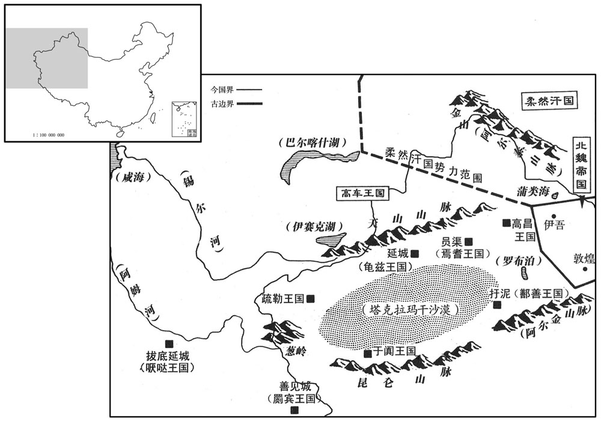
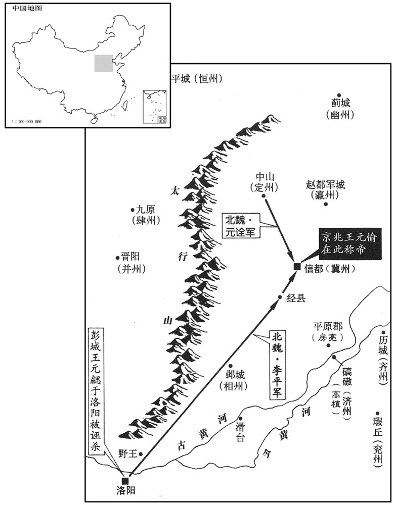
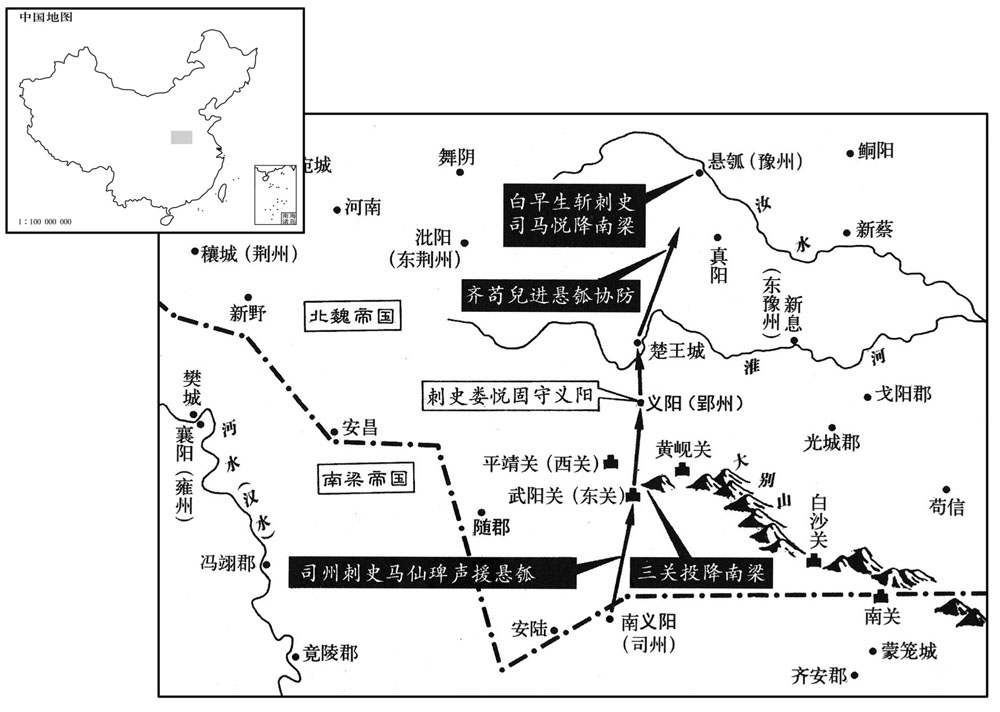
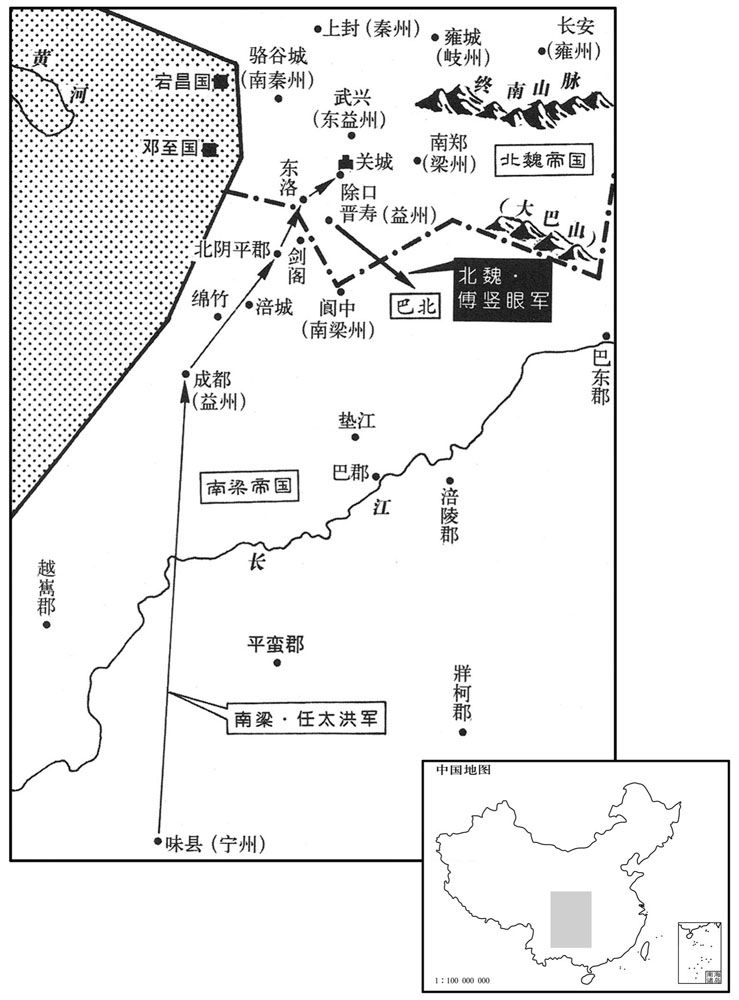

卷次与人物目录 / 卷147
资治通鉴 · 卷第一百四十七【梁纪三】
公元508年至公元514年 · 原文、白话与胡三省注
本页按胡注本编排保存全卷内容。白话采用本站所据译本，未可靠对应的内容另列说明；事件标题用于定位，并非原书文字。
本卷共113段原文，107段有译文对应，6段缺译或待核对。
卷第一百四十七【梁纪三】起着雍困敦（戊子），尽阏逢敦牂（甲午），凡七年。
卷首原文与注释
高祖武皇帝三
公元508年 · 梁高祖武皇帝天监七年
天监七年〔（戊子、五○八）〕
上传原文的注释括号有异常，字符原样保留；无法可靠划分的段落默认全文显示。
本年事件索引（现代整理）
- 北魏颍川太守王神念归降梁朝
- 梁任萧昺兼领军将军
- 梁设百官品秩九品十八班并增设武官班次
- 梁设州望、郡宗、乡豪各一人掌荐举
- 梁任吕僧珍为领军将军，萧昺改任雍州刺史
- 北魏皇子元昌去世，王显因失治受人非议
- 梁太子纳妃，朝廷大赦
- 梁恢复宗正、太仆、大匠、鸿胪等卿职
- 梁任萧秀为荆州刺史并平定巴陵蛮寇
- 北魏立高氏为皇后，高肇专权引发朝臣怨恨
- 梁竟陵公曹景宗去世
- 元愉因遭妻妾羞辱及高肇排挤，在冀州举兵称帝
- 北魏大赦并改元永平
- 李平击败元愉叛军并围困信都
- 梁封皇子萧绩为南康王
- 元勰遭高肇诬陷，被宣武帝赐死
- 李平攻陷信都，元愉逃亡被高肇派人杀害
- 崔光劝宣武帝等李氏产后再行刑罚
- 高颢劝李平赦免元愉胁从之众
- 高植拒绝接受平乱之赏
- 李平因高肇、王显弹劾被除名
- 杨椿反对迁徙柔然降户，后来果如其言
- 彭珍等反魏引梁军入义阳，三关守将降梁
- 白早生杀司马悦据悬瓠，马仙琕出兵援救
- 梁任张稷为尚书左仆射
- 邢峦预言白早生必守悬瓠，魏军随后讨伐
- 邢峦以八百骑急行击败白早生，围困悬瓠
- 成景隽杀宿豫戍主献城降梁
- 北魏遣杨椿率四万兵攻宿豫
- 元英与邢峦攻克悬瓠，白早生投降被杀
- 辛祥与娄悦坚守义阳，击退北魏来攻将领
- 北魏设置十六郡、五十县安置归附太阳蛮
- 柔然遣使献貂裘，魏主拒绝
- 高车王弥俄突败柔然并杀佗汗可汗
- 柔然佗汗可汗之子丑奴继位
- 高许懋请恢复祀天时服大裘
- 梁武帝命舆驾斋戒出行时仍可鼓吹
春，正月，魏颍川太守王神念来奔。〔为后神念子僧辩有功于兴复张本。守，式又翻。〕
春季，正月，北魏颍川太守王神念来投奔梁朝。

本年形势与背景参考图
壬子，以卫尉吴平侯昺兼领军将军。
壬子（二十八日），梁朝任命卫尉吴平侯萧兼领军将军。
诏吏部尚书徐勉定百官九品为十八班，以班多者为贵。二月，乙丑，增置镇、卫将军以下为十品，凡二十四班；不登十品，别有八班。又置施外国将军二十四班，凡一百九号。〔丞相、太宰、太傅、太保、大司马、大将军、太尉、司徒、司空为十八班。诸将军开府仪同三司、左‧右光禄开府仪同三司为十七班。尚书令、太子太傅、左‧右光禄大夫为十六班。尚书左仆射、太子少傅、尚书仆射、右仆私、中书监、特进、领‧护军将军为十五班。中领‧护军、吏部尚书、太子詹事、金紫光禄大夫、太常卿为十四班。中书令、列曹尚书、国子祭酒、宗正‧太府卿、光禄大夫为十三班。侍中、散骑常侍、左‧右卫将军、司徒左长史、卫尉卿为十二班。御史中丞、尚书吏部郎、秘书监、通直散骑常侍、太子左‧右二卫率、左‧右骁‧游、太中大夫、皇弟‧皇子师、司农‧少府‧廷尉卿、太子中庶子、光禄卿为一班。给事黄门侍郎、员外散骑常侍、皇弟‧皇子府长史、太仆‧大匠卿、太子家令‧率更令‧仆、扬州别驾、中散大夫、司徒右长史、云骑、游骑、皇弟‧皇子府司马、朱衣直合将军为十班。尚书左丞、鸿胪卿、中书侍郎、国子博士、太子庶子、扬州中从事、皇弟‧皇子公府从事中郎、太舟卿、大长秋、皇弟‧皇子府咨议、嗣王府长史、前‧左‧右‧后四军、嗣王府司马、庶姓公府长史‧司马为九班。秘书丞、太子中舍人、司徒左西掾、司徒属、皇弟‧皇子友、散骑侍郎、尚书右丞、南徐州别驾、皇弟‧皇子‧公府掾属，皇弟‧皇子单为二卫司马、嗣王‧庶姓公府从中郎、左‧右中郎将、嗣王‧庶姓公府咨议、皇弟‧皇子之庶子府长史‧司马、蕃王府长史‧司马、庶姓持节府长史‧司马为八班。五校、东宫三校、皇弟‧皇子之庶子府中录事‧中记室‧中直兵参军、南徐州中从事、皇弟‧皇子之庶子府‧蕃王府咨议为七班。太子洗马、通直散骑侍郎、司徒主簿、尚书侍郎、著作郎、皇弟‧皇子府功曹史、五经博士、皇弟‧皇子府录事‧记室‧中兵参军、皇弟‧皇子荆‧江‧雍‧郢‧南徐五州别驾、领‧护军长史‧司马、嗣王‧庶姓公府掾属、南台治书侍御史、廷尉三官、谒者仆射、太子门大夫、嗣王‧嗣王‧庶姓公府中录事‧中记室‧中直兵参军、庶姓府咨议为六班。尚书郎中、皇弟‧皇子文学及府主簿、太子太傅‧少傅丞、皇弟‧皇子湘‧豫‧司‧益‧广‧青‧衡七州别驾、皇弟‧皇子荆‧江‧雍‧郢‧南兖五州中从事‧嗣王‧庶姓荆‧江等五州别驾、太常丞、皇弟‧皇子国郎中令、三将、东宫二将、嗣王府功曹史、庶姓公府录事‧记室‧中兵参军‧皇弟‧皇子之庶子府‧蕃王府中录事‧中记室‧中直兵参军为五班。给事中、皇弟‧皇子府正参军、中书舍人、建康三官、皇弟‧皇子北徐‧北兖‧梁‧交‧南梁五州别驾、皇弟‧皇子湘‧豫‧司‧益‧广‧青‧衡七州别驾‧中从事、嗣王‧庶姓湘‧豫等七州别驾、嗣王‧庶姓荆‧江等五州中从事、宗正‧太府‧卫尉‧司农‧少府‧廷尉‧太子詹事等丞、积射‧强弩将军、太子左‧右积弩将军、皇弟‧皇子国大农、嗣王国郎中令、嗣王‧庶姓公府主簿、皇弟‧皇子之庶子府‧蕃王府功曹史‧录事‧记室‧中兵参军为四班。太子舍人、司徒祭酒、皇弟‧皇子公府祭酒、员外散骑侍郎、皇弟‧皇子府行参军、太子太傅‧少傅五官‧功曹‧主簿、二卫司马、公交车令、冑子‧律博士、皇弟‧皇子越‧桂‧宁‧霍四州别驾、皇弟‧皇子北徐‧北兖‧梁‧交‧南梁五州中从事、庶姓北徐等五州别驾、湘‧豫‧司‧益‧广‧青‧衡七州中从事、嗣王‧庶姓公府正参军、皇弟‧皇子之庶子府‧蕃王府曹主簿、武卫将军、光禄丞、皇弟‧皇子国中尉‧太仆‧大匠丞、嗣王国大农、蕃王国郎中令、庶姓持节府中录事‧中记室‧中直兵参军、北馆令为三班。秘书郎、著作佐郎、扬、南徐州主簿、嗣王‧庶姓公府祭酒、皇弟‧皇子单为领‧护‧詹事、二卫等功曹‧五官‧主簿、太学博士、皇弟‧皇子国常侍、奉朝请、国子助教、皇弟‧皇子越‧桂‧宁‧霍四州中从事、皇弟皇子荆‧江等五州主簿、嗣王‧庶姓越‧桂等四州别驾、嗣王‧庶姓北徐等五州中从事、鸿胪丞、尚书五都令史、武骑常侍、材官将军、明堂‧二庙‧帝陵令、嗣王‧庶姓公府行参军、皇弟‧皇子之庶子府正参军、蕃王国大农、庶姓持节府录事‧记室‧中直兵参军、庶姓持节府功曹史为二班。扬、南徐州西曹‧祭酒‧从事、皇弟‧皇子国侍郎、嗣王国常侍、南徐州议曹从事、东宫通事舍人、南台侍御史、大舟丞、二卫‧殿中将军‧皇弟‧皇子之庶子府‧蕃王府行参军、蕃王国中尉、皇弟‧皇子湘‧豫等七州主簿、皇第‧皇子荆‧雍等州西曹祭酒‧议曹从事、皇弟‧皇子西曹‧从事祭酒‧（以上四字疑衍）议曹祭酒‧部传从事、嗣王庶姓越‧桂等四州中从事、嗣王庶姓荆‧江等五州主簿、庶姓持节府主簿、汝阴‧巴陵二国郎中令、太官‧太乐‧太市‧太史‧太医‧太祝‧东西冶‧左右尚方‧南北武库‧车府等令为一班。又诏以「将军之名，高卑舛杂，更加厘定。」于是有司奏置一百二十五号将军。以镇、卫、骠骑、车骑为二十四班，内外通用；征东，征西、征南、征北施外，中军、中卫、中抚、中护施内，为二十三班；镇东、镇西、镇南、镇北施外，镇左、镇右、镇前、镇后施内，为二十二班；安东、安西、安南、安北施外，安左、安右、安前、安后施内，为二十一班；平东、平西、平南、平北施外，翊左、翊右、翊前、翊后施内，为二十班；是为重号将军。忠武、军师为十九班；武臣、爪牙、龙骑、云麾为十八班，代旧前、后、左、右四将军；镇兵、翊师、宣惠、宣毅为十七班，代旧四中郎将：十号为一品。智威、仁威、勇威、信威、严威为十六班，代旧征虏；智武、仁武、勇武、信武、严武为十五班，代旧冠军：十号为一品，所谓五德将军者也。轻车、征远、镇朔、武旅、贞毅为十四班，代旧辅国。凡将军加大者，唯至贞毅而已，通进一阶，优者方得比位从公。宁远、明威、振远、电耀、威耀为十三班，代旧宁朔：十号为一品。武威、武骑、武猛、壮武、飙武为十二班；电威、驰锐、追锋、羽骑、突骑为十一班：十号为一品。折冲、冠武、和戎、安垒、猛烈为十班；扫狄、雄信、扫虏、武锐、椎锋为九班：十号为一品。略远、贞威、决胜、开远、光野为八班；厉锋、轻锐、讨狄、荡虏、荡夷为七班：十号为一品。武毅、铁骑、楼船、宣猛、树功为六班；克狄、平虏、讨夷、平狄、威戎为五班：十号为一品。伏波、雄戟、长剑、冲冠、雕骑为四班；佽飞、安夷、克戎、绥狄、威虏为三班：十号为一品。前锋、武义、开边、招远、全威为二班；绥虏、荡寇、横野、驰射为一班：十号为一品。凡十品，二十四班，亦以班多为贵。其制，品十，取其盈数，以法十日；班二十四以法气序。制簿悉以大号居后，以为选法自小迁大也。其不登十品应须军号者，有牙门代旧建威，期门代旧建武，为八班；候骑代旧振威，熊渠代旧振武，为七班；中坚代旧奋威，典戎代旧奋武，为六班；戈船代旧扬威，绣衣代旧扬武，为五班；执讯代旧广威，行阵代旧广武，为四班；鹰扬为三班；陵江为二班；偏将军、裨将军为一班：凡十四号，别为八班，以象八风，所施甚轻。又有武安、镇远、雄义拟车骑为二十四班；抚东、抚西、抚南、抚北拟四征为二十三班；宁东、宁西、宁南、宁北拟四镇为二十二班；威东、威西、威南、威北拟四安为二十一班；绥东、绥西、绥南、绥北拟四平为二十班：凡十九号为一品。安远、安边拟忠武、军师为十九班；辅义、安沙、卫海、抚河拟武臣等四号为十八班；平远，抚朔、宁沙、航海拟镇兵等四号为十七班：凡十号为一品。翊海、朔黟、拓远、威河、龙幕拟智威等五号为十六班；威陇、安漠、绥边、宁寇、梯山拟智武等五号为十五班：凡十号为一品。宁境、绥河、明信、明义、威漠拟轻车等五号为十四班；安陇、向义、宣节、振朔、候律拟宁远等五号为十三班：凡十号为一品。平寇、定远、宁陇、陵海、振漠拟武威等五号为十二班；驰义朔、明节、执信、怀德拟电威等五号为十一班：凡十号为一品。抚边、定陇、绥关、立信、菶义拟折冲等五号为十班；绥陇、宁边、定朔、立节、怀威拟扫狄等五号为九班：凡十号为一品。怀关、静朔、扫寇、宁河、安朔拟略远等五号为八班；扬化、超陇、执义、来化、度嶂拟厉锋等五号为七班：凡十号为一品。平河、振陇、雄边、横沙、宁关拟武毅等五号为六班；怀信、宣义、弘节、浮辽、凿空拟克狄等五号为五班：凡十号为一品。扞海、款塞、归义、陵河、明信拟伏波等五号为四班；奉忠、守义、弘信、抑化、立义拟佽飞等五号为三班：凡十号为一品。绥方、奉正、承化、浮海、渡河拟先锋等五号为二班；怀义、奉信、归诚、怀泽、伏义拟绥虏等五号为一班：凡十号为一品。大凡一百九号，亦为二十四班，施于外国。〕
武帝诏令吏部尚书徐勉定百官九品为十八班，以班多者为贵。二月乙丑（十一日），增置镇、卫将军以下为十品，一共二十四班；不入十品之内的，另有八班。又设置用于外国的将军二十四班，一共一百零九号。
庚午，诏置州望、郡宗、乡豪各一人，专掌搜荐。〔搜，求也；搜才能而荐之于上。〕
庚午（十六日），武帝诏令设置州望、郡宗、乡豪各一人，专门掌管搜求人才向上举荐。
乙亥，以南兖州刺史吕僧珍为领军将军。领军掌内外兵要，宋孝建以来，制局用事，与领军分兵权，典事以上皆得呈奏，领军拱手而已。及吴平侯昺在职峻切，官曹肃然。制局监皆近幸，颇不堪命，以是不得久留中，丙子，出为雍州刺史。〔先用僧珍，次日出昺。昺，音丙。雍，于用翻。〕
乙亥（二十一日），梁朝任命南兖州刺史吕僧珍为领军将军。领军掌握内外兵权，但自从宋孝建年间以来，制局专权，与领军分享兵权，典事以上皆得呈奏，而领军则大权旁落，无所事事。到了吴平侯萧但任领军一职时，由于他认真负责，执法严厉，所以官曹肃然而听命。制局监们都是皇帝的宠幸，很受不了萧的那一套，因此萧不能久留于朝廷之中，丙子（二十二日），出任雍州刺史。
三月，戊子，魏皇子昌卒，侍御师王颢失于疗治，〔医师侍御左右，因以名官。后魏之制，太医令属太常，掌医药；而门下省别有尚药局侍御师，盖今之御医也。此又一王显，非御史中尉之王显也。治，直之翻。〕时人皆以为承高肇之意也。
三月戊子（初五），北魏皇子元昌去世，侍御师王显疗治有失，当时的人们都认为他是秉承了高肇的旨意而行事的。
夏，四月，乙卯，皇太子纳妃，大赦。
夏季，四月乙卯（初二），梁朝皇太子纳妃子，大赦天下。
五月，己亥，诏复置宗正、太仆、大匠、鸿胪，又增太府、太舟，仍先为十二卿。〔复，扶又翻。五代史志曰：是年以太常为太常卿，加置宗正卿，以大司农为司农卿，是为春卿；加置太府卿，以少府为少府卿，加置太仆卿，是为夏卿；以卫尉为卫尉卿，廷尉为廷尉卿，将作大匠为大匠卿，是为秋卿；以光禄勋为光禄卿，大鸿胪为鸿胪卿，都水使者为太舟卿，是为冬卿。凡十二卿，皆置丞及功曹、主簿。〕
五月己亥（十七日），武帝又设置宗正、太仆、大匠、鸿胪，并增设太府、太舟，加上原先的共为十二卿。
癸卯，以安成王秀为荆州刺史。先是，巴陵马营蛮缘江为寇，州郡不能讨，〔先，悉荐翻。〕秀遣防合文炽帅众燔其林木，〔梁制，上宫、东宫置直合，王公置防合。文，姓也。帅，读曰率。〕蛮失其险，州境无寇。〔蛮无所依阻，故不敢为寇。〕
癸卯（二十一日），梁朝任命安成王萧秀为荆州刺史。原先，巴陵的马营蛮沿长江为寇，州郡无法讨平，萧秀派遣防文炽率领一帮人马烧掉了江边的林木，蛮子失去了天险，无所依赖，故不敢再出来抢，从此州境内无有寇患。
秋，七月，甲午，魏立高贵嫔为皇后。〔嫔，毗宾翻。〕尚书令高肇益贵重用事。肇多变更先朝旧制，减削封秩，抑黜勋人，由是怨声盈路。群臣宗室皆卑下之，〔更，工衡翻。朝，直遥翻。下，遐嫁翻。〕唯度古尚书元匡与肇抗衡，先自造棺置听事，欲舆棺诣阙论肇罪恶，自杀以切谏；肇闻而恶之。〔度，徒洛翻。恶，乌路翻。〕会匡与太常刘芳议权量事，〔魏因议乐，并议定权量。量，力让翻。〕肇主芳议，匡遂与肇喧竞，〔竞，争也。〕表肇指鹿为马。〔以肇比赵高。〕御史中尉王显奏弹匡诬毁宰相，有司处匡死刑；〔处，昌吕翻。〕诏恕死，降为光禄大夫。
秋季，七月甲午（十三日），北魏立高贵嫔为皇后。沿书令高肇因此越发贵重而专权了。高肇变更了许多先朝的旧制度，减削封秩，抑黜功勋之臣，因此而怨声载道。群臣宗室都俯首听命于高肇，唯有度支尚书元匡同高肇抗衡，他先自己做了一副棺材置于听事之处，准备用车把棺材装上运到殿上去讲论高肇的罪恶，然后自杀以对皇上进行死谏。高肇知道之后非常憎恨元匡，恰遇元匡与太常刘芳议定度量衡之事，高肇同意刘芳的意见，元匡便同高肇争执崐吵闹，把高肇比作是指鹿为马的赵高。御史中尉王显在奏章中弹劾元匡诋毁宰相高肇，有关部门判处元匡死刑。皇上诏令恕免元匡不死，降为光禄大夫。
八月，癸丑，竟陵壮公曹景宗卒。
八月癸丑（初二），竞陵壮公曹景宗去世。
初，魏主为京兆王愉纳于后之妹为妃，〔为，于伪翻。〕愉不爱，爱妾李氏，生子宝月。于后召李氏入宫，棰之。〔棰，止橤翻。〕愉骄奢贪纵，所为多不法。帝召愉入禁中推按，杖愉五十，出为冀州刺史。愉自以年长，〔长，知两翻。〕而势位不及二弟，〔二弟，清河王怿，广平王怀。〕潜怀愧恨。又，身与妾屡被顿辱，高肇数谮愉兄弟，愉不胜忿；〔被，皮义翻。数，所角翻。胜，音升。〕癸亥，杀长史羊灵引、司马李遵，诈称得清河王怿密疏，云「高肇弒逆」。遂为坛于信都之南，〔魏冀州刺史治信都。〕即皇帝位，大赦，改元建平，立李氏为皇后。法曹参军崔伯骥不从，愉杀之。在北州镇皆疑魏朝有变，〔谓州镇在冀州之北者。朝，直遥翻。〕定州刺史安乐王诠具以状告之，〔乐，音洛。诠，且缘翻。〕州镇乃安。乙丑，魏以尚书李平为都督北讨诸军行冀州事以讨愉。平，崇之从父弟也。〔从，才用翻。〕
起初，北魏宣武帝为京兆王元愉纳于皇后的妹妹为妃子，元愉不喜爱她，而喜爱妾李氏，生下儿子宝月。于皇后把李氏召入宫中，用棒打她。元愉骄奢贪纵，所做的大多是不法之事。宣武帝把元愉召入宫中询问调查，打了他五十大棍，让他出任冀州刺史。元愉自以为年长，但权势位置都比不上两个弟弟，因此心中暗怀愧恨。同时，由于自己和妾屡次被侮辱，高肇又数次谗言陷害自己兄弟三人，所以元愉内心不胜忿恨；癸亥（十二日），元愉杀了长史羊灵引、司马李遵，假称获得清河王元怿的秘密报告，报告中有“高肇弑君叛逆”之言。于是，元愉就在信都的南郊筑坛祭天，登上了皇帝位，发出大赦令，改年号为建平，并且立李氏为皇后。法曹参军崔伯骥不顺从，元愉就杀了他。冀州之北的州镇都怀疑北魏朝廷有变故，定州刺史安乐王元诠把真实情况一一告诉他们，各州镇才安心了。乙丑（十四日），北魏使命尚书李平为都督北讨诸军、行冀州事，让他去讨伐元愉。李平是李崇叔父的弟弟。

丁卯，魏大赦，改元永平。
丁卯（十六日），北魏大赦天下，改年号为永平。
魏京兆王愉遣使说平原太守清河房亮，亮斩其使；愉遣其张灵和击之，为亮所败。〔说，式芮翻。将，即亮翻。败，补迈翻。〕李平军至经县，〔经县，汉、晋属安平国，魏收志属巨鹿郡。〕诸军大集，夜，有蛮兵数千斫平营，矢及平帐，平坚卧不动，俄而自定。〔蛮兵盖亦李平所统，欲为内变，而平不动，故自定。〕九月，辛巳朔，愉逆战于城南草桥，平奋击，大破之，愉脱身走入城，平进围之。壬辰，安乐王诠破愉兵于城北。
北魏京兆王元愉派遣使者去游说平原太守清河人房亮，房亮斩了来使；元愉派遣他的将领张灵和去攻打房亮，被房亮打败。李平的军队到了经县，各路军队汇集一起，夜间，有数千名蛮兵来冲击李平的营地，飞箭射到了李平的帐内，但是李平坚卧不动，不一会儿就自行平定下来了。九月辛巳朔（初一），元愉在城南草桥迎战李平，李平奋力攻击，大败敌军，元愉脱身而逃入城中，李平进军围城。壬辰（十二日），安乐王元诠在城北打败了元愉的军队。
癸巳，立皇子绩为南康王。
癸巳（十三日），梁朝立皇子萧绩为南康王。
魏高后之立也，彭城武宣王勰固谏，〔勰，音协。〕魏主不听。高肇由是怨之，数谮勰于魏主，〔数，所角翻。〕魏主不之信。勰荐其舅潘僧固为长乐太守，京兆王愉之反，胁僧固与之同，〔冀州与长乐郡同治信都，故僧固为愉所胁。乐，音洛。〕肇因诬勰北与愉通，南招蛮贼。〔伊阙以南，接于淮、汝、江、沔，皆有蛮左。〕彭城郎中令魏偃、前防合高祖珍〔高祖珍前尝为勰防合，时已去官，故曰前防合。〕希肇提擢，构成其事。肇令侍中二晖以闻，晖不从，又令左卫元珍言之。帝以问晖，晖明勰不然；又以问肇，肇引魏偃、高祖珍为证，帝乃信之。戊戌，召勰及高阳王雍、广阳王嘉、清河王怿、广平王怀、高肇俱入宴。勰妃李氏方产，固辞不赴。中使相继召之，〔使，疏吏翻。〕不得已，与妃诀而登车，入东掖门，度小桥，牛不肯进，击之良久，〔良久，稍久也，或曰甚久也。〕更有使者责勰来迟，乃去牛，〔去，羌吕翻。〕人挽而进。宴于禁中，至夜，皆醉，各就别所消息。〔令各就便安之处，消酒毒而息真气。〕俄而元珍引武士赍毒酒而至，勰曰：「吾无罪，愿一见至尊，死无恨！」元珍曰：「至尊何可复见！」〔复，扶又翻。〕勰曰：「至尊圣明，不应无事杀我，乞与告者一对曲直！」武士以刀镮筑之，勰大言曰：「冤哉，皇天！忠而见杀。」武士又筑之，勰乃饮毒酒，武士就杀之，向晨，以褥裹尸载归其第，云王因醉而薨。李妃号哭大言曰：〔号，户刀翻。〕「高肇枉理杀人，天道有灵，汝安得良死！」魏主举哀于东堂，赠官、葬礼皆优厚加等。在朝贵贱，莫不丧气，〔朝，直遥翻。丧，息浪翻。〕行路士女皆流涕曰：「高令公枉杀贤王。」〔肇为尚书令，故称曰令公。〕由是中外恶之益甚。〔为高肇被诛张本。恶，乌路翻。〕
北魏立高皇后之时，彭城武宣王元勰再三劝谏不可，宣武帝不听。高肇由此而怨恨元勰，数次在宣武帝面前进谗言诋毁元勰，宣武帝不听信。元勰崐推荐自己的舅舅潘僧固为长乐太守，京兆王元愉反叛，胁迫潘僧固与他同伙，高肇因此而诬告元勰北与元愉勾结相通，南招蛮贼。彭城武宣王元勰手下的郎中令魏偃、原先的防阁高祖珍希望高肇提拔他们，就与高肇勾结一起陷害元勰。高肇命令侍中元晖上报宣武帝，元晖不从，又命令左卫元珍去报告了。宣武帝就此事询问元晖，元晖说明元勰不会如此；宣武帝又以此事问高肇，高肇叫来魏偃和高祖珍作证，宣武帝就相信了高肇的诬陷。戊戌（十八日），宣武帝召元勰以及高阳王元雍、广阳王元嘉、清河王元怿、广平王元怀、高肇一起入宴。元勰的妃子李氏正在生产，因此他再三推辞不去赴宴。中使相继而来宣召，元勰万不得已，只好与李氏诀别，然后登车而去，进入东掖门，过小桥，拉车的牛不肯向前，打了它很久还是不向前迈进，又有使者责备元勰来的迟了，于是只好去掉牛，由人把车拉进去。宴会在宫中举行，到了夜间，全都喝醉了，宣武帝令他们各就方便之处休息。不一会儿，元珍带着武士送毒酒来了，元勰说：“我没有罪，希望能一见圣上，死而元恨！”元珍说：“圣上怎么可以复见呢？”元勰说：“皇上对明，不应该没有事就把我杀掉，乞求与诬告我的人当面对质！”武士用刀环向元勰的脸上打去，元勰大声呼喊道：“冤枉啊！老天爷！我如此忠心反而被杀！”武士又打，元勰只好饮喝毒酒，武士上前杀了元勰，天亮之后，用褥子裹了尸体装在车上送回他的府第，声称大王因酒醉而死去。李妃放声大哭，高声喊道：“高肇冤枉杀人，伤天害理，老天爷有灵，你怎么能得到好死呢？”宣武帝在东堂为元勰举哀，赠官和葬礼莫不优厚加倍。朝廷之内的大小官员，无不丧气叹息，行路男女都流着眼泪说：“高令公冤枉地杀害了贤德的彭城王。”从此朝廷内外对高肇更加憎恨得厉害了。
京兆王愉不能守信都，癸卯，烧门，携李氏及其四子从百余骑突走。〔骑，奇寄翻。〕李平入信都，斩愉所置冀州牧韦超等，遣统军叔孙头追执愉，置信都，以闻。群臣请诛愉，魏主不许，命锁送洛阳，申以家人之训。〔愉，魏主弟也，故欲训责之。〕行至野王，高肇密使人杀之。〔考异曰：魏书及北史愉传皆云：「愉每宿止亭传，必携李手，尽其私情，虽谫絷之中，饮赏自若，略无愧惧之色。至野王，愉语人曰：『虽主上慈深，不忍杀我，吾亦何面见至尊！』于是歔欷流涕，绝气而死。或云高肇令人杀之。」按愉既败被执，犹略无愧惧，安能惭见魏主，遽感激绝气而死！盖肇潜使人杀愉，因以此言绐魏主耳。〕诸子至洛、魏主皆赦之。
京兆王元愉不能守住信都，于癸卯（二十三日）之日，烧掉城门，携带着李氏以及四个儿子，在一百多名骑兵的护送下突围而逃。李平进入信都，斩了元愉所设置的冀州牧韦超等人，派遣统军叔孙头去追捕元愉，抓住了他，押在信都，并报告朝廷。群臣们请求诛杀元愉，宣武帝不同意，命令把他锁住送来洛阳，要以家法来训责他。当元愉走到野王之时，高肇秘密派人杀掉了他。元愉的几个儿子到了洛阳，宣武帝全赦免了他们。
魏主将屠李氏，中书令崔光谏曰：「李氏方怼，刑至刳始，乃桀、纣所为，〔武王数纣之罪曰：刳剔孕妇。〕酷而非法。请俟产毕，然后行刑。」从之。
北魏宣武帝要杀李氏，中书令崔光劝谏说：“李氏正在怀孕，刳胎之刑，乃是桀、纣所为，太残酷而不合法。请等她产毕，然后再行刑。”宣武帝听从了崔光的意见。
李平捕愉余党千余人，将尽杀之，录事参军高颢曰：「此皆胁从，前既许之原免矣，〔宜为表陈。」〔为，于伪翻；下为国同。〕平从之，皆得免死。颢，佑之孙也。〔高佑，允之从祖弟，以文学事魏孝文。〕
李平拘捕了元愉的余党一千多人，将要全部杀掉，录事参军高颢说：“这些人都是胁从，前头既然已经许诺免他们不死，就应该上表说明情况。”李平听从了高颢的意见，因此这些人都得以免死。高颢是高的孙子。
济州刺史高植帅州军击愉，有功当寺，〔济，子礼翻。帅，读曰率。〕植不受，曰：「家荷重恩，为国致效，〔致效，言致身而效死也。荷，下可翻。〕乃其常节，何敢求赏！」植，肇之子也。
济洲刺史高植率领州军攻打元愉，有功劳，应当加封，但是高植不接受，说：“我家承受朝廷重恩，为国家致身而效死，乃是应尽的大节，那里还敢求赏呢？”高植是高肇的儿子。
加李平散骑常侍。〔散，悉亶翻。骑，奇寄翻。〕高肇及中尉王显素恶平，显弹平在冀州隐截官口，〔此谓叛党男女合没为官口者。恶，乌路翻。弹，徒丹翻。〕肇奏除平名。〔除名，不得通籍禁门。〕
李平被提为散骑常侍。高肇以及中尉王显向来忌恨李平，王显就弹劾李平在冀州偷偷地截留叛党男女而不输入官府为奴，高肇上奏把李平从朝廷中除名。
初，显祖之世，柔然万余口〔【章：十二行本「口」作「户」；乙十一行本同；孔本同；张校同。】〕降魏，置之高平、薄骨律二镇，〔魏世祖太延二年置高平镇，是后肃宗正光五年改置原州。又大延二年置薄骨律镇，肃宗孝昌中改置灵州。宋白曰：太和十年改薄骨律镇为沃野镇。降，户江翻。〕及太和之末，叛走略尽，唯千余户在。太中大夫王通请徙置淮北以绝其叛，诏太仆卿杨椿持节往徙之，椿上言：「先朝处之边徼，所以招附殊俗，且别异华、戎也。〔朝，直遥翻。处，昌吕翻；下河处同。徼，吉吊翻。别，彼列翻。〕今新附之户甚众，若旧者见徒，新者必不自安，是驱之使叛也。且此属衣毛食肉，乐冬便寒，〔衣，于既翻。乐，音洛。〕南土湿热，往必歼尽。进失归附之心，退无藩卫之益，置之中夏，〔歼，息廉翻。夏，户雅翻。〕或生后患，非良策也。」不从，遂徙于济州，缘河处之。及京兆王愉之乱，皆浮河赴愉，所在抄掠，如椿之言。〔济，子礼翻。抄，楚交翻。〕
当初，在献文帝之世，柔然国有一万多户投降北魏，被安置在高平、薄骨律二镇，到了太和末期，差不多叛逃贻尽，仅剩下了一千余户。太中大夫王通请示要把这些柔然人迁置到淮北去，以便使他们再也无法叛逃，朝廷诏令太仆卿杨椿持节牌去那里负责迁移他们，杨椿上表说：“先朝之所以把这些柔然人安置在边境之地，是为了招附异族，并且区别汉、戎。现在，新归附的人口特别多，如果他们见过去归附的人被迁移，必定不能自安，这是驱赶着让他们叛逃。而且，这些人衣毛食肉，喜欢冬天不怕寒冷，南方气候潮湿闷热，把他们迁到那里去，一定会使他们全部病死。这事如果实行的话，不但会失去境外的归附之心，而且也失去让他们在边地卫护的益处，再说把他们安置在中夏，或许会生后患，所以并非是良策。”建议不被采纳，于是这些柔然人就被迁移到济州，让他们沿黄河边居住。京兆王元愉叛乱之时，这些人都渡过黄河投奔元愉，一路抢劫掠夺，正如杨椿所预料的那样。
庚子，魏郢州司马彭珍等叛魏，潜引梁兵趋义阳，三关戍主侯登等以城来降。郢州刺史娄悦婴城自守，魏以中山王英都督南征诸军事，将步骑三万出汝南以救之。〔趋，七喻翻。降，户江翻。将，即亮翻。骑，奇寄翻。考异曰：田益宗传，诏曰：「英统马步七万，邢峦统精骑三万，」盖虚声耳。今从魏帝纪。〕
庚子（二十日），北魏郢州司马彭珍等人叛国，偷偷地带领梁朝兵赶往义阳，三关戌的主将侯登等人献城投降了梁朝。郢州刺史娄悦环城自守，北魏任命中山王元英为都督南征诸军事，统率步、骑兵三万出汝南前去援救。
冬，十月，魏悬瓠军主白早生杀豫州刺史司马悦，〔瓠，户故翻。考异曰：梁帝纪作「白皁生」，马仙琕传作「琅邪王司马庆会」。今皆从魏书。〕自号平北将军，求救于司州〔【章：十二行本「州」下有「刺史」二字；乙十一行本同；孔本同；退斋校同；张校同，云无注本无「刺史」二字。】〕马仙琕。〔琕，部田翻。〕时荆州刺史安成王秀为都督，〔秀以荆州刺史督诸州，司州其所统也。〕仙琕签求应赴。〔签前叙求应赴之事，注见一百二十卷宋文帝元嘉元年。〕参佐咸谓宜待台报，〔谓宜奏上天台而待报。江左率谓朝廷为台，亦谓之天台。〕秀曰：「彼待我以自存，〔彼，谓白早生。〕援之宜速，待敕虽旧，〔谓旧制须待台敕。〕非应急也。」即遣兵赴之。上亦诏仙琕救早生。仙琕进顿楚王城，〔楚王城即楚王戍。〕遣副将齐苟儿〔将，即亮翻。考异曰：魏书作「苟仁」，今从梁书、南‧北史。〕以兵二千助守悬瓠。诏以早生为司州刺史。〔考异曰：梁帝纪，十月丙子，「魏阳关主许敬珍以城内附，诏大举北伐，以始兴王憺帅众入清，王茂帅众向宿豫。丁丑，白早生与豫州刺史胡逊以城内属，以早生为司州、胡逊为豫州刺史。明年正月壬辰，魏镇东参军成景隽斩宿豫城主严仲宝，以城内属。二月丁卯，魏楚王城主李国兴以城内附。」姓名年月事迹既与魏书参差，又徧检诸列传皆无其事。今并从魏书。〕
冬季，十月，北魏悬瓠军主白早生杀了豫州刺史司马悦，自称为平北将军，向梁朝司州的马仙求救。当时，荆州刺史安成王萧秀为都督，马仙把情况写在简上送给萧秀请求前去帮忙，萧秀手下的参佐们都认为这事要上报朝廷批准后方可行事，萧秀说：白早生等待着我们去援救，方可自存，所以应该火速去援救，等待朝廷批准虽是旧制，但并非是应急之策。”因此便派兵前去救援白早生。梁武帝也诏令马仙去援救白早生。马仙进驻楚王城，派遣副将齐苟儿带兵两千帮助守悬瓠。梁武帝任命白早生为司州刺史。
丙寅，以吴兴太守张稷为尚书左仆射。〔守，式又翻。〕
丙寅（十六日），梁朝任命吴兴太守张稷为尚书左仆射。
魏以尚书邢峦行豫州事，将兵击白早生。魏主问之曰：「卿言，早生走也，守也﹖何时可平﹖」对曰：「早生非有深谋大智，正以司马悦暴虐，乘众怒而作乱，民迫于凶威，不得已而从之。纵使梁兵入城，水路不通，粮运不继，亦成禽耳。早生得梁之援，溺于利欲，必守而不走。若临以王师，士民必翻然归顺，不出今年，当传首京师。」魏主悦，命峦先发，使中山王英继之。
北魏委任尚书邢峦兼管豫州事务，率兵攻打白早生。宣武帝问邢峦：“你说，白早生是逃跑，还是顽守呢？何时可以讨平他？”邢峦回答：“白早生没有深谋大智，只因司马悦暴虐残忍，因此利用众人之愤怒而反叛作乱，百姓迫于他的凶威，不得已而顺从了他。即使梁朝军队入城了，但是水路不通，粮运跟不上，也会被我们抓住的。白早生得到梁朝的援助，被利欲冲昏头脑，必定死守而不跑。如果派朝廷军队前去讨伐，士民大众们必定翻然归顺，不出今年，一定能把白早生的首级送到京师来。”宣武帝十分高兴，命令邢峦先出发，让中山王元英随后出发。
峦帅骑八百，倍道兼行，五日至鲍口。丙子，早生遣其大将胡孝智将兵七千，离城二百里逆战，〔帅，读曰率。骑，奇寄翻；下同。将，即亮翻；下椿将同。离，力智翻。〕峦奋击，大破之，乘胜长驱至悬瓠。早生出城逆战，又破之，因渡汝水，围其城。诏加峦都督南讨诸军事。
邢峦率领八百骑兵，快速赶路，五天光景就到了鲍口，丙子（二十六日），白早生派遣他的大将胡孝智率领七千兵卒，在离城二百里的地方迎战邢峦，邢峦奋勇出击，大败敌手，乘胜长驱直入，直抵悬瓠。白早生出城迎战，邢峦又打败了他，因此渡过汝水，围住了悬瓠城。北魏宣武帝诏令邢峦为都督南讨崐诸军事。
丁丑，魏镇东参军成景隽杀宿豫戍主严仲贤，以城来降。〔降，户江翻。〕时魏郢、豫二州，自悬瓠以南至于安陆诸城皆没，唯义阳一城为魏坚守。〔为，于伪翻。〕蛮帅田益宗帅群蛮以附魏，〔蛮帅，所类翻。宗帅，读曰率。〕魏以为东豫州刺史，〔魏东豫州治新息广陵城，领汝南、东新蔡、新蔡、弋阳、长陵郡。〕上以车骑大将军、开府仪同三司、五千户郡公招之，益宗不从。
丁丑（二十七日），北魏镇东参军成景隽杀了宿豫的主将严仲贤，献城投降梁朝。当时，北魏的郢、豫二州，从悬瓠以南直到安陆诸城全部丧失，只有义阳一城还坚守着。蛮族将帅田益宗率领群蛮投附北魏，北魏任命他为东豫州刺史，梁武帝以封为车骑大将军、开府仪同三司、五千户郡公的好处招还田益宗，但是田益宗不接受。
十一月，庚寅，魏遣安东将军杨椿将兵四万攻宿豫。
十一月庚寅（十一日），北魏派遣安东将军杨椿统率四万兵攻打宿豫。
魏主闻邢峦褛捷，命中山王英趣义阳，英以众少，累表请兵，弗许。〔趣，与趋同，七喻翻。少，诗沼翻。〕英至悬瓠，辄与峦共攻之。十二月，己未，齐苟儿等开门出降，斩白早生及其党数十人。英乃引兵前趋义阳。〔趋，七喻翻。〕宁朔将军张道凝先屯楚王城，癸亥，弃城走，英追击，斩之。
北魏宣武帝得知邢峦屡屡获捷，命令中山王元英前去义阳，元英因兵少，多上表请求增兵，朝廷不同意。元英到了悬瓠，就与邢峦一起攻城。十二月己未（初十），齐苟儿等人打开城门出降，斩了白早生及其党羽几十人。元英带兵前去义阳。宁朔将军张道凝先驻扎在楚王城，癸亥（十四日），弃城逃跑，元英追击，斩了张道凝。

魏义阳太守狄道辛祥与娄悦共守义阳，将军胡武城、陶平虏攻之，祥夜出袭其营，擒平虏，斩武坡，由是州境获全。论功当赏，娄悦耻功出其下，间之于执政，赏遂不行。〔间，古苋翻。史言高肇专魏，赏罚无章。〕
北魏义阳太守狄道人辛祥与娄悦共同防守义阳，将军胡武城、陶平虏攻打他们，辛祥夜间出来袭击胡、陶二人的营盘，擒获了陶平虏，斩了胡武城，从此州境获得完整。论功劳辛祥应当得赏，但是娄悦耻于自己的功劳在辛祥之下，便向执政的高肇陷害辛祥，于是便没有奖赏辛祥。
壬申，魏东荆州表「桓晖之弟叔兴前后招抚太阳蛮，归附者万余户，请置郡十六，县五十，」〔自是之后，蛮左郡县不可胜纪矣。〕诏前镇东府长史郦道元案行置之。〔行，下孟翻。〕道元，范之子也。〔郦范见一百三十二卷宋明帝泰始三年。〕
壬申（二十三日），北魏东荆州上表称：“桓晖的弟弟桓叔兴前后招抚太阳蛮，前来归附的有一万多户，请求设置十六个郡，五十个县。”朝廷诏令前镇东府长史郦道元具体实施。郦道元是郦范的儿子。
是岁，柔然佗汗可汗复遣纥奚勿六跋敌貂裘于魏，〔佗，徒河翻。汗，音寒。可，从刊入声。复，扶又翻。〕魏主弗受，报之如前。〔前事见上卷五年。〕
这一年，柔然佗汗可汗又派遣纥奚勿六跋向北魏进献貂裘，宣武帝不受，仍如前次那样作了答复。
初，高车侯倍穷奇为嚈哒所杀，〔嚈哒国，大月氏之种类也，亦曰高车之别种，其原出于塞北，自金山而南，在于阗之西，去长安一万一百里；其王都拔底城，盖王舍城也。嚈，益涉翻。哒，当割翻，又妷葛翻，又宅轧翻。〕执其子突而去，其众分散，或奔魏，或奔柔然。魏主遣羽林监河南孟威抚纳降户，置于高平镇。〔降，户江翻。〕高车王阿伏至罗残暴，国人杀之，立其宗人跋利延。嚈哒奉弥俄突以伐高车，国人杀跋利延，迎弥俄突而立之。弥俄突与佗汗可汗战于蒲类海，不胜，西走三百余里。佗汗军于伊吾北山。会高昌王曲嘉求内徙于魏，时孟威为龙骧将军，〔骧，思将翻。〕魏主遣威发凉州兵三千人迎之，至伊吾，佗汗见威军，布而遁去。〔布，普布翻。〕弥俄突闻其离骇，追击，大破之，杀佗汗于蒲类海北，割其发送于威，且遣使入贡于魏。〔使，疏吏翻。〕魏主使东城子于亮报之，赐遗甚厚。〔遗，于季翻。〕高昌王嘉失期不至，威引兵还。
起初，高车侯倍穷奇被哒所杀，抓了他的儿子弥俄突而去，其众分散，有的投奔了北魏，有的投靠了柔然。宣武帝派遣羽林监河南人孟威接纳、安抚前来投降的人口，把他们安置在高平镇。高车王阿伏至罗十分残暴，高车国人杀了他，立他的同族之人跋利延为王。哒带上弥俄突讨伐高车，高车国人杀了跋利延，迎接弥俄突回国并立为王。弥俄突与佗汗可汗在蒲类海交战，没有取胜，向西逃到三百多里远的地方去了。佗汗驻军于伊吾北山。正好高昌王麴嘉请求内迁到北魏去，当时孟威为龙骧将军，宣武帝派遣孟威带领三千凉州兵去迎接，到达伊吾之时，佗汗见到孟威的军队，就害怕得逃跑了。弥俄突知道佗汗吓跑了，立即追击，大败敌方，在蒲类海的北边杀了佗汗，割下他的头发送给孟威，并且派遣使者到北魏进贡。宣武帝指派东城子于亮接待使者，赐送崐特别丰厚。高昌王麴嘉没有在约定的时间到来，孟威带兵返回。
佗汗可汗子丑奴立，号豆罗伏跋豆伐可汗，〔魏收曰：魏言「彰制」也。〕改元建昌。
佗汗可汗的儿子奴继位而立，号为豆罗伏跋豆伐可汗，改年号为建昌。
宋、齐旧仪，祀天皆服衮冕，兼著作郎高许懋请造大裘，从之。〔周礼天官：司裘掌为大裘以供王祀天之服。郑众注云：大裘，黑羔裘，服以祀天，示质。时有司寻大裘之制，唯郑玄注司服云：大裘，羔裘也。既无所出，未可为据。按六冕之服皆玄上纁下，今宜以玄缯为之，其制式如裘，其裳以纁，皆无文绣；冕则无旒。制曰：可。〕
刘宋、南齐时期的旧仪式，祀天时都穿戴兖冕，兼著作郎高阳人许懋奏请裁制大裘，得到采纳。
上将有事太庙，诏以「斋日不乐，自今舆驾始出，鼓吹从而不从，还宫，如常仪。」〔还宫则鼓吹振作。吹，昌瑞翻。〕
梁武帝将祭太庙，诏令：“斋日禁止音乐，从现在开始舆驾出发，乐队跟从但不吹奏，还宫之时，仍按平常的仪式鼓吹奏乐。”
公元509年 · 梁高祖武皇帝天监八年
八年〔（己丑、五○九）〕
本年事件索引（现代整理）
春，正月，辛巳，上祀南郊，大赦。时有请封会稽、禅国山者，〔国山在义兴国山县，隋废义兴郡为义兴县，并国山入焉。我朝太平兴国元年，以太宗蕃邸旧讳，改义兴为宜兴。会，工外翻。〕上命诸儒草封禅仪，欲行之。许懋建议，以为「舜柴岱宗，是为巡狩。而郑引孝经钩命决云：『封于太山，考绩柴燎；禅乎梁甫，刻石纪号，』此纬书之曲说，非正经之通义也。〔纬，于贵翻。〕舜五载一巡狩，春夏秋冬周徧四岳，〔书舜典，岁二月，东巡狩至于岱宗，柴望秩于山川。五月，南巡狩至于南岳。八月，西巡狩至于西岳。十有一月，北巡狩至于北岳。载，子亥翻。〕若为封禅，何其数也！〔数，所角翻。〕又如管夷吾所说七十二君，燧人之前，世质民淳，安得泥金检玉！结绳而治，安得镌文告成！夷吾又云：『唯受命之君然后得封禅，』周成王非受命之君，云何封太山禅社首！神农即炎帝也，而夷吾分为二人，妄亦甚矣。若圣主，不须封禅；若凡主，不应封禅。盖齐桓公欲行此事，夷吾知其不可，故举怪物以屈之。〔班志曰：齐桓公既霸，会诸侯于葵丘，而欲封禅。管仲曰：「古者封太山禅梁父者七十二家，夷吾所记者十有二焉。昔无怀氏封太山，禅云云；伏羲封太山，禅云云；神农氏封太山，禅云云；炎帝封太山，禅云云；黄帝封太山，禅亭亭；颛顼封太山，禅云云；帝喾封泰山，禅云云；尧封太山，禅云云；舜封太山，禅云云；禹封太山，禅会稽；汤封太山，禅云云；成王封太山，禅于社首：皆受命乃得封禅。」桓公曰：「寡人九合诸侯，一匡天下，昔三代受命何以异此！」管仲睹桓公不可穷以辞，因设之以事曰：「古之封禅，鄗上黍，北里禾，所以为盛；江、淮以一茅三脊，所以会藉；东海致比目之鱼，西海致比翼之鸟，然后物有不召而自至者十有五焉。今凤凰、麒麟不至，嘉禾不生，而蓬蒿藜莠茂，鸱鸮群翔，而欲封禅，无乃不可乎！」桓公乃止。〕秦始皇尝封太山，孙暼尝遣兼司空董朝至阳羡封禅国山，〔五代志曰：义兴，旧曰阳羡。〕皆非盛德之事，不足为法。然则封禅之礼，皆道听所说，失其本文，由主好名于上，〔好，呼到翻。〕而臣阿旨于下也。古者祀天祭地，礼有常数，诚敬之道，尽此而备，至于封禅，非所敢闻。」上嘉纳之，因推演懋议，称制旨以答请者，由是遂止。
春季，正月，辛巳（初三），梁武帝在南郊祭天，大赦天下。当时，有人奏请在会稽和国山封禅，梁武帝命令诸儒生草拟封禅仪式，准备进行封禅。许懋提出建议，认为：“舜帝在泰山烧柴祭天，是为了巡狩。而郑玄引《孝经钩命决》说：‘在泰山大祭，烧柴祭天把政绩报告；在梁甫山祭地，刻石记载年号。’这是纬书的曲说，不是正式经书的本来意思。舜帝五年巡狩一次，春夏秋冬巡遍四岳，如果为了封禅，为何这么频繁呢？又如管夷吾所说的七十二君，燧人氏之前，世风质朴百姓淳厚，怎么能够把金粉书写在竹筒上呢？当时结绳而治，怎么能够镌刻文字报告成功呢？管夷吾又说：‘只有受命之君，然后才能封禅。’周成王不是受命之君，从何谈起封太山禅社首呢？神农即是炎帝，然而管夷吾却说成是两个人，实在是荒唐。如果是圣主，无须封禅；如果是凡主，不应该封禅。大概齐桓公想进行封禅，管夷吾知道不可以进行，所以有意列举许多奇异物象出现时才可以封禅的事例，以便难住齐桓公，使他打消了念头。秦始皇曾经封禅太山，孙皓曾经派遣兼司空董朝到达阳羡封禅国山，都不是盛德之事，不足以效法。那么封禅的礼仪，全都是道听途说的事，失去了其本来的意义，完全是因为君主在上喜好名声，而臣子们在下曲意逢迎。古代的祀祭天地，礼仪有常规，诚敬之道，至此而完备，至于封禅，实在是不敢妄说。”武帝表扬和采纳了许懋的意见，于是进一步扩充了许懋的建议，作为圣旨回答请求封禅的人，因此便中止了这一计划。
魏中山王英至义阳，将取三关，先策之曰：「三关相须如左右手，若克一关，两关不待攻而破；攻难不如攻易，宜先攻东关。」〔东关即武阳关。易，以豉翻；下势易同。〕又恐其并力于东，乃使长史李华帅五统向西关，〔五统，五统军之众。西关即平靖关。帅，读曰率。〕以分其兵势，自督诸军向东关。
北魏中山王元英抵达义阳，将要攻取三关，先进行策划，他说：“三关相互依赖如左右手一般，如果攻克一关，其他两关便不攻而自破；攻难不如攻易，应该先攻打东关。”又担心对方合并力量于东关，就指派长史李华率领五统军的兵力去西关，以便分散对方的兵力，他自己则亲自督率各路军队去东关。
先是，马仙使云骑将军马广屯长薄，军主胡文超屯松岘。两申，英至长薄，戊戌，长薄溃，马广遁入武阳，英进围之。上遣冠军将军彭瓮生、骠骑将军徐元季将兵援武阳，英故纵之使入城，曰：“吾观此城形势易取。”瓮生等既入，英促兵攻之，六日而拔，虏三将及士卒七千余人。进攻广岘，太子左卫率李元履弃城走；又攻西关，马仙亦弃城走。开初，马仙派云骑将军马广屯驻长薄，军主胡文超屯驻松岘。丙申（十八日），元英到了长薄，戊戌（二十日），长薄被攻破，马广逃到武阳，元英又进兵围住了该城。梁武帝派遣冠军将军彭雍瓮生、骠骑将军徐元孝率兵援救武阳，元英故意让他们入城，说：“我察看这座城的形势，很容易攻取。”彭瓮生等人入城之后，元英便催促兵士发起急攻，六天就攻打下来了，俘虏了三个将领以及士卒七千多人。元英又挥师进攻广岘，太子左卫率李元履弃城逃跑；元英又攻打西关，马仙也弃城逃跑了。
先是，马仙琕使云骑将军马广屯马薄，军主胡文超屯松岘。〔先，悉荐翻。骑，奇寄翻。岘，户典翻。考异曰：梁马仙琕传云：「遣马广会超守三关。」今从魏中山王英传。〕丙申，英至长薄，戊戌，长薄溃马广遁入武阳，英进围之。上遣冠军将军彭瓮生、骠骑将军徐元季将兵援武阳，〔冠，古玩翻。骠，匹妙翻。骑，奇寄翻。季将，即亮翻；下同。考异曰：英传作「徐超秀」，今从魏帝纪。〕英故纵之使入城，曰：「吾观此城形势易取。」〔易，以豉翻。〕瓮生等既入，英促兵攻之，六日而拔，虏三将及士卒七千余人。进攻广岘，〔广岘，盖即黄岘关。〕太子左卫率李元履弃城走；又攻西关，马仙琕亦弃城走。
本段缺少可靠对应白话，原文完整保留；未使用生成译文。
上使南郡太守韦叡将兵救仙琕，〔邵阳之捷，叡迁左卫将军，寻为安西长史、南郡太守。〕叡至安陆，俱筑城二丈余，更开大堑，起高楼。〔堑，七艳翻。〕众颇讥其示怯，叡曰：「不然，为将当有怯时，不可专勇。」中山王英急追马仙琕，将复邵阳之耻，闻叡至，乃退。上亦有诏罢兵。
梁武帝指派南郡太守韦睿率兵援救马仙，韦睿到达安陆，把城墙加高到两丈多，又挖了大壕沟，起造高楼。众人颇为讥笑韦睿这是显示怯懦，韦睿说：“不对，做将领当有胆怯的时候，不可以一昧地逞勇猛。”中山王元英急追马仙，要报复邵阳之耻，听说韦睿到了，就撤退了。武帝也下达诏令罢兵。
初，魏主遣中书舍人鲖阳董绍慰劳叛城，〔鲖阳县，汉属汝南郡，晋属汝阴郡，魏属新蔡郡。孟康曰：鲖，音纣红翻。隋废新蔡郡为县，属豫州。鲖阳之地当在新蔡县界。劳，力到翻。〕白早生袭而囚之，送于建康。魏主既克悬瓠，命于齐苟儿等四将之中分遣二人，敕扬州为移，〔魏扬州治寿阳。移，移文也。〕以易绍及司马悦首。〔考异曰：绍传云「归苟儿等十人」，今从司马悦传。移书未至，领军将军吕僧珍与绍言，爱其文义，言于上，上遣主书霍灵超谓绍曰：「今听卿还，令卿通两家之好，〔好，呼到翻；下通好同。〕彼此息民，岂不善也！」因召见，赐衣物，〔见，贤遍翻。〕令舍人周舍慰劳之，〔舍人，中书通事舍人。劳，力到翻。〕且曰：「战争多年，民物涂炭，吾是以不耻先言与魏朝通好，比亦有书全无报者，〔朝，直遥翻。好，呼到翻；下同。比，毗至翻，近也。〕卿宜备申此意。今遣传诏霍严：「霍」改「周」。】〕灵秀送卿至国，迟有嘉问。」〔迟，直利翻，待也。〕又谓绍曰：「卿知所以得不死不﹖〔死不，读曰否。〕今者获卿，乃天意也。夫立君以为民也，〔为，于伪翻。〕凡在民上，岂可以不思此乎！若欲通好，今以宿豫还彼，彼当以汉中见归。」绍还魏言之，魏主不从。
本段缺少可靠对应白话，原文完整保留；未使用生成译文。
三月，魏荆州刺史元志将兵七万寇潺沟，〔潺沟在汉北，据梁书吴平侯昺传，「破志于潺沟，流尸盖汉水，」则潺沟之水南注于汉。潺，仕山翻。〕驱迫群蛮，群蛮悉渡汉水来降，雍州刺史吴平侯昺纳之。〔降，户江翻。雍，于用翻。昺，音丙。〕纲纪皆以蛮累为边患，不如因此除之，〔州郡上佐，谓之纲纪，言其纲纪州郡之事也。〕昺曰：「穷来归，我诛之不祥。且魏人来侵，吾得蛮以为屏蔽，不亦善乎！」〔屏，必郢翻。〕乃开樊城受其降，命司马朱思远等击志于潺沟，大破之，斩首万余级。志，齐之孙也。〔拓跋齐见一百二十卷宋文帝元嘉四年。〕
三月，北魏荆州刺史元志统率七万大军入寇潺沟，驱赶威迫各蛮族，群蛮全都渡过汉水来投降梁朝，雍州刺史吴平侯萧接纳了他们。州郡里身份地们较高的官员们都认为蛮人累累带来边患，不如乘此机会把他们除掉，萧却说：“他们走投无路来投归我们，我如杀掉他们，实在是不祥之事。况且北魏人来侵犯之时，我有这些蛮人做屏障，不也是很好吗！”于是打开樊城接受了这些前来投降的蛮人，又命令司马朱思远等人在潺沟攻击元英，大获全胜，斩首一万多名。元志是元齐的孙子。
夏，四月，戊申，以临川王宏为司空，加车骑将军王茂开府仪同三司。〔骑，奇寄翻。〕
夏季，四月戊申（初一），梁朝任命临川王萧宏为司空，加封车骑将军王茂开府仪同三司。
丁卯，魏楚王城主李国兴以城降。
丁卯（二十日），北魏楚王城的主将李国兴献城投降梁朝。
秋，七月，癸巳，巴陵王萧宝义卒。
秋季，七月癸巳（十七日），梁朝巴陵王萧宝义去世。
九月，辛巳，魏封故北海王详子颢为北海王。〔详得罪死事见一百四十五卷天监元年。〕
本段缺少可靠对应白话，原文完整保留；未使用生成译文。
魏公孙崇造乐尺，以十二黍为寸；刘芳非之，更以十黍为寸。尚书令高肇等奏：「崇所造八音之器及度量皆与经传不同，诘其所以然，云『必依经文，声则不协。』请更令芳依周礼造乐器，俟成集议并呈，从其善者。」诏从之。〔夫作乐者先定律，律起于黄锺，黄锺之长以黍审其度，黄锺之龠以黍审其容。周礼典同虽曰掌六律六同之和，以辩天地四方阴阳之声，以为乐器，然度之长短，容之多少，未尝详言之也。冬官考工既出于汉，而凫氏为锺但言其广长圆径深厚，而絫黍之法无闻焉。肇请令芳依周礼造乐器，未知其何所依也。魏收曰：太和中，诏中书监高闾修正音律，久未能定。闾表太乐祭酒公孙崇参知律吕钟磬之事。景明四年，并州获古铜权，诏付崇以为锺律之准。永平中，崇更造新尺，以一黍之长絫为寸法。寻太常卿刘芳受诏修乐，以秬黍中者一黍之广即为一分，而中尉元匡以一黍之广度黍二缝以取一分，三家纷竞，久不能决。太和十九年，高祖诏以一黍之广用成分体，九十黍之长以定铜尺。有司秦从前诏，而芳尺同高祖所制，故遂典修金石。更，工衡翻。传，直恋翻。诘，去吉翻。〕
北魏公孙崇造乐尺，以十二黍为一寸，刘芳说他定的不对，改成以十黍为一寸。尚书令高肇等人上奏：“公孙崇所造的八音之器以及度量标准全都与经传所载不同，反问他为什么这样，他说：‘一定依照经文的话，则声音就不协调。’请求另外命令刘芳依照《周礼》造乐器，待制成之后集体议论鉴定并上呈，采用其中好的。”宣武帝诏令同意。
冬，十月，癸丑，魏以司空广阳王嘉为司徒。
冬季，十月癸丑（初九），北魏任命司空广阳王元嘉为司徙。
十一月，己丑，魏主于式干殿为诸僧及朝臣讲维摩诘经。〔为，于伪翻。朝，直遥翻。〕时魏主专尚释氏，不事经籍，中书侍郎河东裴延隽上疏，以为「汉光武、魏武帝，虽在戎马之间，未尝废书，筅帝迁都行师，手不释卷，良以学问多益，不可暂辍故也。陛下升法座，亲讲大觉，凡在瞻听，尘蔽俱开。然五经治世之模楷，应务之所先，〔治，直之翻。〕伏愿经书互览，孔、释兼存，则内外俱周，真俗斯畅矣。」
十一月己丑（十五日），北魏宣武帝在式乾殿为众僧以及朝臣们讲解《维摩诘经》。当时，宣武帝专门崇尚佛教，不读经籍，中书侍郎河东人裴延上疏，指出：“汉光武帝、魏武帝，虽然忙于戎马征战，但是未曾废弃书籍，先帝迁都行军，手不释卷，正因为学问多有益处，不可以临时中断。陛下升上法座，亲自讲解佛法奥义，在场的人瞻听之际，内心尘蔽俱开。然而《五经》是治世的楷模，处理世务所应首先研读的，所以恭敬地希望圣上佛经与儒书互读，孔学与释教兼存，如此则内外都能周全，教义和世务都能通畅。”
时佛教盛于洛阳，沙〔【章：十二行本「沙」上有「中国」二字；乙十一行本同；孔本同。】〕门之外，自西域来者三千余人，魏主别为之立永明寺千余间以处之。处士南阳冯亮有巧思，〔为，于伪翻。处，昌吕翻。思，相吏翻。〕魏主使与河南尹甄琛、沙门统僧暹择嵩山形胜之地立闲居寺，极岩壑土木之美。由是远近承风，无不事佛，比及延昌，〔甄，之人翻。琛，丑林翻。比，必利翻。〕州郡共有一万三千余寺。
当时，佛教盛于洛阳，除中国和尚而外，从西域来的和尚还有三千多名，北魏宣武帝另外建立了永明寺一千多间禅房，来安置他们。处士南阳人冯亮很聪明，宣武帝指派他同河南尹甄深、沙门统僧暹选择嵩山地形好的地方建立了闲居寺，修建得非常好，极尽岩壑土木之美。于是远近受影响，无不信奉佛教，到了延昌之时，各州郡共有一万三千多处寺院。
是岁，魏宗正卿元树来奔，赐爵邺王。树，翼之弟也。时翼为青、冀二州刺史，镇郁洲〔水经注，朐山东北海中有大洲，谓之郁洲。〕久之，翼谋举州降魏，事泄而死。〔元翼来降见上卷五年。降，户江翻。〕
这一年，北魏宗正卿元树来投奔梁朝，武帝赐予他邺王的爵位。元树是元翼的弟弟。当时，元翼是青、冀二州的刺史，坐镇郁洲，很久之后，元翼密谋率全州投降北魏，因事情泄露而被杀。
译本中未与胡注本可靠对应的内容
以下另列供核对版本差异，不并入胡注本正文。
译本所附古文
初，魏主遣中书舍人阳董绍慰劳叛城，白早生袭而囚之，送于建康。魏主既克悬瓠，命于齐苟儿等四将之中分遣二人，敕扬州为移，以易绍及司马悦首。移书未至，领军将军吕僧珍与绍言，爱其文义，言于上，上遣主书霍灵超谓绍曰：“今听卿还，令卿通两家之好，彼此息民，岂不善也！”因召见，赐衣物，令舍人周舍慰劳之，且曰：“战争多年，民物涂炭，吾是以不耻先言与魏朝通好，比亦有书全无报者，卿宜备申此意。今遣传诏霍灵秀送卿至国，迟有嘉问。”又谓绍曰：“卿知所以得不死不？今者获卿，乃天意也。夫立君以为民也，凡在民上，岂可以不思此乎！若欲通好，今以宿豫还彼，彼当以汉中见归。”绍还魏言之，魏主不从。
译本白话
原先，北魏宣武帝派遣中书舍人阳人董绍招抚慰劳反叛之城，白早生袭击并囚禁了董绍，把他送到了建康。悬瓠攻克之后，宣武帝命令从齐苟儿等四个将领之中分派两人，令扬州给梁朝送去移文，以这两人换回董绍和司马悦的首级。移文还没有到来，领军将军吕僧珍与董绍谈话，爱慕他的文才，告诉了梁武帝，梁武帝派主书霍灵超对董绍说：“现在让你回去，令你沟通两家之好，彼此休生养民，岂不是好事一桩！”于是召见了董绍，赐给他衣物，又令舍人周舍慰劳了他，且对他说：“战争多年，百姓生灵涂炭，财物毁坏，我们因此不以先提出与魏朝和好为耻辱，近来也有信给贵国，但是一点答复也没有，您应该把我们的这个意思完整地转达一下。现在派遣传诏霍灵秀送您回国，等待您的好消息。又对董绍说：“您知道不知道自己何以没有死呢？现在得到您，这是天意。建立君主完全是为了百姓大众，凡在君主之位者，岂可以不想到这个呢？如果贵国想和好，我们就立即把宿豫还给你们，你们也应当把汉中归还我们。”董绍回到北魏后把梁朝请求和好的事讲了，但是宣武帝不同意。
译本所载内容待核对（不作白话）
[7]九月，辛巳，魏封故北海王详子颢为北海王。[7]九月辛巳（初六），北魏封已故北海王元详的儿子元颢为北海王。
公元510年 · 梁高祖武皇帝天监九年
九年〔（庚寅、五一○）〕
本年事件索引（现代整理）
春，正月，乙亥，以尚书令沈约为左光禄大夫，右光禄大夫王莹为尚书令。约文学高一时，而贪冒荣利，用事十余年，政之得失，唯唯而已。〔冒，莫北翻；下同。唯，于癸翻。〕自以久居端揆，有志台司，论者亦以为宜，而上终不用；及求外出，又不许。徐勉为之请三司之仪，〔梁官制有开府同三司之仪，在开府仪同三司下。为，于伪翻。〕上不许。
春季，正月，乙亥（初二），梁朝任命尚书令沈约为左当禄大夫，右光禄大夫王莹为尚书令。沈约的文章名高一时，然而贪求荣华之利，掌权十多年，对政治方面的得失，唯唯喏喏，只会顺从。他自以为久为尚书省长官，因此有意于三公之位，人们的议论也认为他合适，但是梁武帝终究没任用他；他请求到外地去做官，也不准许。徐勉为他请求开府同三司之仪的官衔，武帝也不同意。
庚寅，新作缘淮塘，北岸起石头迄东冶，南岸起后渚篱门迄三桥。
庚寅（十七日），梁朝新筑缘淮塘，北岸从石头起到东冶，南岸从后渚篱门起到三桥。
三月，丙戌，魏皇子诩生。〔【章：十二行本「生」下有「大赦」二字；乙十一行本同；孔本同；张校同。】〕诩母胡充华，临泾人，〔充华，晋武帝制。宋明帝时以婕妤、充华等五职位亚九嫔，萧齐之世，位列九嫔。临泾县，自汉以来属安定郡。诩，况羽翻。〕父国珍袭武始伯。〔隋志，金城郡狄道县，后魏置武始郡。〕充华初选入掖庭，同列以故事祝之，〔【章：十二行本「之」下有「曰」字；乙十一行本同；孔本同。】〕「愿生诸王、公主，勿生太子。」充华曰：「妾之志异于诸人，柰何畏一身之死而使国家无嗣乎！」及有娠，同列劝去之，〔娠，音身。去，羌吕翻。〕充华不可，私自誓曰：「若幸而生男，次第当长，〔长，丁丈翻，今知两翻；下渐长同。〕男生身死，所不憾也。」既而生诩。
三月丙戌（十四日），北魏皇子元诩出生。元诩的母亲胡充华是临泾人，胡充华的父亲胡国珍袭位武始伯。胡充华初被选入后宫之时，和她身份一样的嫔妃们照惯例替她祝告说：“愿生诸王、公主，不要生太子。”胡充华却说：“我的志向与你们不同，岂能害怕一身之死而让国家没有继承人呢？”到她怀孕之后，嫔妃们劝她把胎儿打掉，她却不干，并私下里发誓说：“如果有幸生下男孩，排行应该是长子，儿子生下来后我死去，没有丝毫遗憾之处。”很快就生下了元诩。
先是，魏主频丧皇子，〔先，悉荐翻。丧，直浪翻。〕年渐长，深加慎护，择良家宜子者以为乳保，〔乳母、保母也。〕养于别宫，皇后、充华皆不得近。〔近，其靳翻。〕
早先，北魏宣武帝屡丧皇子，他年纪渐渐大了，所以对元诩特别重视，谨慎护理，选择良家妇女中奶水好的做乳母，在别宫中哺养元诩，皇后和胡充华都不得接近。
己丑，上幸国子学，亲临讲肄。乙未，诏皇太子以下及王侯之子年可从师者皆入学。
己丑（十七日），梁武帝临幸国子学，亲自进入讲堂察视。乙未（二十三日），武帝诏令皇太子以下以及王侯之子年龄可以从师学习的都入学。
旧制：尚书五都令史皆用寒流。夏，四月，丁巳，诏曰：「尚书五都，职参政要，非但总领众局，亦乃方轨二丞；〔方轨，谓并驾也。二丞，谓左右丞。〕可革用士流，秉此群目。」于是以都令史视奉朝请，〔朝，直遥翻。〕用太学博士刘纳兼殿中都，司空法曹参军刘显兼吏部都，太学博士孔虔孙兼金部都，司空法曹参军萧轨兼左右户都，宣毅黑曹参军王颙兼中兵都，〔宣毅将军府之墨曹参军。颙，鱼容翻。〕并以才地兼美，首膺其选。
旧制规定：尚书五都令史全都选用寒门出身者担任。夏季，四月，丁巳（十六日），武帝诏令：“尚书五都，是参与朝政的重要职位，不但总领全局，而且与左右丞相并驾；可以择用士族门第出身的来担任，以操持全盘。”于是以都令史的地位等同于奉朝请，任命太学博士刘纳兼殿中都，司空法曹参军刘显兼吏部都，太学博士孔虔孙兼金部都，司空法曹参军萧轨兼左右户都，宣毅将军府墨曹参军王兼中兵都，上述几人都因才能和门第俱属上流而首先被选中。
六月，宣城郡吏吴承伯挟妖术聚众，〔妖，于骄翻。〕癸丑，攻郡杀太守朱僧勇，转屠旁县。闰月，己丑，承伯踰山，奄至吴兴。东土人素不习兵，吏民恇扰奔散，或劝太守蔡撙避之，撙不可，〔恇，去王翻。撙，慈损翻。〕募勇敢闭门拒守。承伯尽锐攻之，撙帅众出战，大破之，临陈，斩承伯。〔帅，读曰率。陈，读曰阵。〕撙，兴宗之子也。〔蔡兴宗仕宋大明、泰始之间，以方正自将。〕承伯余党入新安，攻陷黟、歙诸县，〔黟，音伊。歙，书涉翻。〕太守谢览遣兵拒之，不胜，逃奔会稽，台军讨贼，平之。览，瀹之子也。〔谢瀹仕宋、齐之间，位要近，有清望。会，工外翻。〕
六月，宣城郡的吏员吴承伯以妖术召聚众人，癸丑（十三日），攻进郡城杀了太守朱僧勇，转而又去旁边的县去屠杀人口。闫月己丑（十九日），吴承伯超过山岭，突然来到吴兴。东边的人向来不操兵演武，所以官吏和老百姓们都担惊受怕，四处奔散，有人劝太守蔡撙躲避一下，蔡撙不愿意，他招募勇敢者关闭城门坚决拒守。吴承伯竭尽全力攻城，蔡撙率众出战，大败敌手，亲自出阵，斩了吴承伯。蔡撙是蔡兴宗的儿子。吴承伯的残部进入新安，攻陷了黟、歙等县，太守谢览派兵抵抗，没有取胜，逃跑到会稽，朝廷军队前来讨伐贼寇，平定了他们。谢览是谢瀹的儿子。

冬，十月，魏中山献武王英卒。
冬季，十月，北魏中山献武王元英去世。
上即位之三年，诏定新历，员外散骑侍郎祖暅奏其父冲之考古法为正，历不可改。〔散，悉亶翻。骑，奇寄翻。暅，古邓翻，又况晚翻。〕至八年，诏太史课新旧二历，新历密，旧历疏，是岁，始行冲之大明历。〔旧历，何承天历也。新历，祖冲之历也。冲之上历见一百二十九卷宋孝武帝大明六年。〕
梁武帝即位三年时，诏定新的历法，员外散骑侍郎祖上奏称他的父亲祖冲之考定古法正确，历法不可以改。到了八年之时，武帝又诏令太史核定新旧两种历法，新历法密，旧历法疏，这一年，开始实行祖冲之的《大明历》。
魏刘芳奏「所造乐器及教文、武二舞登歌鼓吹曲等已成，〔吹，昌瑞翻。〕乞如前敕集公卿群儒议定，与旧乐参呈。若臣等所造形制合古击拊会节，请于来年元会用之。」诏：「舞可用新，余且仍旧。」
北魏刘芳上奏：“所制造的乐器以及教的文武二舞、登歌、鼓吹曲等已经完成，请求如以前圣旨所命令的那样召集公卿群儒们议定，与旧乐一起上呈。如果我们几人所制造的乐器，形式制度符合古式，敲奏起来合节奏的话，请于来年元旦朝会之时使用。”宣武帝诏令：“舞蹈可以采用新的，其余的暂且仍用旧的。”
公元511年 · 梁高祖武皇帝天监十年
十年〔（辛卯、五一一）〕
本年事件索引（现代整理）
春，正月，辛丑，上祀南郊，大赦。
春季，正月辛丑（初四），梁武帝在南郊祭天，大赦天下。
尚书左仆射张稷，自谓功大赏薄，〔稷以杀齐东昏侯为功。〕尝侍宴乐寿殿，〔乐，音洛。〕酒酣，怨望形于辞色。上曰：「卿兄杀郡守，〔稷兄緕杀刘遐，事见一百三十四卷宋顺帝升明元年。守，式又翻。〕弟杀其君，有何名称！」稷曰：「臣乃无名称，〔称，尺证翻。〕至于陛下，不得言无勋。东昏暴虐，义师亦来伐之，岂在臣而已！」上捊其须〔捊，卢括翻。须，古须字通。〕曰：「张公可畏人！」稷既惧且恨，乃求出外，癸卯，以稷为青、冀二州刺史。
尚书左仆射张稷，自认为攻劳大，奖赏却少，一次他侍宴于东寿殿，酒酣之际，怨气不满表露于言语表情之中。武帝说：“你的哥哥杀了郡太守，你的弟弟杀了他的君主，你有什么值得夸耀的呢？”张稷回答：“我是没什么值得炫耀的地方，但是为陛下效力以来，不能说没有功劳。东昏侯残暴肆虐，义师也来讨伐他，何况我呢？”武帝捋着他的胡须，说：“张公让人感到害怕呀！”张稷心里既惧害又怨恨，于是请求外放，癸卯（初六），武帝任命他为青、冀二州刺史。
王珍国亦怨望，〔王珍国与稷同杀东昏侯，其怨望之心与稷同。〕罢梁、秦二州刺史还，〔还，从宣翻，又音如字。考异曰：梁书，珍国未尝为梁、秦刺史，今从南史。〕酒后于坐启云：〔坐，徂卧翻。〕「臣近入梁山便哭。」上大惊曰：「卿若哭东昏，则已晚；若哭我，我复未死！」珍国起拜谢，竟不答，坐即散，〔复，扶又翻。坐，徂卧翻。〕因此疏退，久之，除都官尚书。
王珍国也有怨气，他被罢去梁、秦二州刺史还京后，于酒后在座位上启奏武帝说：“我前不久进入梁山便哭了。”武帝听了大吃一惊，说道：“你如果哭东昏侯，则已经晚了；如果哭我，我还没有死！”王珍国站起来拜谢，竟然不回答，酒席当即就散了，王珍国因此被疏远了，很久之后，王珍国被任命为都官尚书。
丁巳，魏汾州山胡刘龙驹聚众反，侵扰夏州，诏谏议大夫薛和发东奏、汾、华、夏四州之众以讨之。〔魏高祖太和十一年，分秦州置华州，治华阴，领华山、登城、白水郡。又置夏州治统万，领化政、阐熙、金明、代名郡。夏，户雅翻。华，户化翻。〕
丁巳（二十日），北魏汾州山胡刘龙驹聚众造反，侵拢夏州，北魏宣武帝诏令谏议大夫薛和征调东秦、汾、华、夏四州的兵力讨伐刘龙驹。
辛酉，上祀明堂。
辛酉（二十四），武帝在明堂祭祀。

三月，琅邪民王万寿杀东莞、琅邪二郡太守刘砜，〔邪，音耶。莞，音管。砜，之舌翻。考异曰：梁帝纪云「三月辛丑」，按长历是月丁酉朔，而卢昶传云「三月二十四夜，万寿等攻掩朐城」。盖辛酉也。今不日以阙疑。又梁马仙琕传及魏帝纪卢昶传皆云「刘砜」，而梁帝纪云「邓砜」，盖字误也。〕据朐山，召魏军。〔朐，音劬。〕
三月，琅邪百姓王万寿杀了东莞、琅邪二郡太守刘晰，占据了朐山，召请北魏军队前来。
壬戌，魏广阳懿烈王嘉卒。
壬戌（二十六日），北魏广阳懿烈王元嘉去世。
魏徐州刺史卢昶遣郯城戍副张天惠、〔秦置郯郡，汉改为东海郡，魏复置郯郡，属东徐州。郯，音谈。〕琅邪戍主傅文骥相继赴朐山，青、冀二州刺史张稷遣兵拒之，不胜。〔梁青、冀二州治郁洲。〕夏，四月，文骥等据朐山，诏振远将军马仙琕击之。〔琕，部田翻。〕魏又遣假安南将军萧宝寅、假平东将军天水赵遐将兵据朐山，受卢昶节度。〔将，即亮翻。〕
北魏徐州刺史卢昶派遣郯城的戍副张天惠、琅邪的戍主傅文骥相继赶赴朐山，梁朝青、冀二州刺史张稷派兵抵挡他们，没有取胜。夏季，四月，傅文骥等人占据了朐山，武帝诏令振远将军马仙去攻打。北魏又派遣代理安南将军萧宝寅、代理平东将军天水人赵遐率兵据守朐山，接受卢昶的指挥调遣。
甲戌，魏薛和破刘龙驹，悉平其党，表置东夏州。〔东夏州领偏城、朔方、定阳、上郡。唐之延州，魏之东夏州也。夏，户雅翻。〕
甲戌（初九），北魏薛和打败了刘龙驹，把他的党羽全部铲平，并上表设置了东夏州。
五月，丙辰，魏禁天文学。
五月丙辰（二十一日），北魏禁止了天文学。
以国子祭酒张充为尚书左仆射。充，绪之子也。〔张绪，岱之兄子，善谈名理。〕
梁朝任命国子祭酒张充为尚书左仆射。张充是张绪的儿子。[11]马仙围朐山，张稷权顿六里以督馈运，上数发兵助之。秋，魏卢昶上表请益兵六千，米十万石，魏主以兵四千给之。冬，十一月，己亥，魏主诏扬州刺史李崇等治兵寿阳，以分朐山之势。卢昶本儒生，不习军旅。朐山城中粮樵俱竭，傅文骥以城降；十二月，庚辰，昶引兵先遁，诸军相继皆溃，会大雪，军士冻死及堕手足者三分之二，仙追击，大破之。二百里间，僵尸相属，魏兵免者什一二，收其粮畜器械，不可胜数。昶单骑而走，弃其节传、仪卫俱尽；至郯城，借赵遐节以为军威。魏主命黄门侍郎甄琛驰锁昶，穷其败状，及赵遐皆免官。唯萧宝寅全军而归。
马仙琕围朐山，张稷权顿六里以督馈运，上数发兵助之。〔数，所角翻。〕秋，魏卢昶上表请益兵六千，米十万石，魏主以兵四千给之。冬，十一月，己亥，魏主诏扬州刺史李崇等治兵寿阳，以分朐山之势。〔治，直之翻。〕卢昶本儒生，不习军旅。朐山城中粮樵俱竭，傅文骥以城降；〔降，户江翻。〕十二月，庚辰，昶引兵先遁，诸军相继皆溃，会大雪，军士冻死及堕手足者三分之二，仙琕追击，大破之。二百里间，僵尸相属，魏兵免者什一二，收其粮畜器械，不可胜数。〔属，之欲翻。胜，音升。考异曰：魏帝纪，卢昶败在十一月。今从梁帝纪。梁纪云「斩馘十余万」，按卢昶表云：「此兵九千，贼众四万，求益兵六千，」魏主以四千给之。安得十余万众！盖梁史为夸大耳。〕昶单骑而走，弃其节传、仪卫俱尽；〔传，张恋翻。〕至郯城，借赵遐节以为军威。魏主命黄门侍郎甄琛驰驲锁昶，穷其败状，〔甄，之人翻。琛，丑林翻。驲，人质翻，驿传也。〕及赵遐皆免官。唯萧宝寅全军而归。
本段缺少可靠对应白话，原文完整保留；未使用生成译文。
卢昶之在朐山也，御史中尉游肇言于魏主曰：「朐山蕞尔，僻在海滨，卑湿难居，〔蕞，祖外翻。〕于我非急，于贼为利。为利，故必致死以争之；非急，故不得已而战；以不得已之众击必死之师，恐稽延岁月，所费甚大。假令得朐山，徒致交争，终难全守，所谓无用之田也。〔左传吴将伐齐，子胥谏曰：「得志于齐，犹获石田也，无所用之。」〕闻贼屡以宿豫求易朐山，若必如此，持此无用之地，复彼旧有之疆，兵役时解，其地为大。」魏主将从之，会昶败，迁肇侍中。肇，明根之子也。〔游明根事魏太武及孝文，以耆宿见重。〕
卢昶在朐山之时，御史中尉游肇对北魏宣武帝说：“朐山弹丸之地，偏处海滨，地势低下，异常潮湿，难以居住，对于我们不是急用之处，而对于贼敌则是非常有用的。正因为对他们有用处，所以必定要拼死相争；对我们用处不大，所以不得已而交战。以不得已之众抵抗拼命的军队，恐怕拖延时日，耗费甚大。假使能得到朐山，徒然地导致双方互相争夺，终将难以保全，正所谓无用之地。听说贼敌屡次提出要以宿豫交换朐山，如果真是这样的话，用这块无用之地，换回来那块过去就属我们所有的疆域，兵戈之争顿时化解，其益处是非常大的。”宣武帝准备要照此行事，恰恰卢昶战败，就提升游肇为侍中。游肇是游明根的儿子。

马仙琕为将，能与士卒同劳逸，所衣不过布帛，所居无帏幕衾屏，饮食与厮养最下者同。〔将，即亮翻。衣，于既翻。厮，息移翻。养，养马者，音余亮翻。韦昭曰：析薪为厮，炊烹为养。〕其在边境，常单身潜入敌境，伺知壁壨村落险要处，〔伺，相吏翻。〕所攻战多捷，士卒亦乐为之用。〔乐，音洛。为，于伪翻。〕
马仙作为将帅，能同士卒们同甘共苦，穿的衣服都是布帛制成，住的地方没有帏幕衾屏，饮食与仆人、马等最低下者同样。他镇守边境，常常只身潜入敌境，偷偷察看壁垒村落险要之处，打仗大多能获胜，士卒们也乐于为他卖力。
魏以甄琛为河南尹，琛表曰：「国家居代，患多盗窃，世祖发愤广置主司里宰，皆以下代令长及五等散男有经略者乃得为之。〔长，知两翻。五等散男，谓爵为五等男而居散官者。魏书曰：魏公、侯、伯、子、男，有开国，有散，凡散各降开国一品。非以其居散官而谓之散男也。散，悉亶翻。〕又多置吏士为其羽翼，崇而重之，始得禁止。今迁都已来，天下转广，四远赴会，事过代都，五方杂沓，寇盗公行，里正职轻任碎，多是下材，人怀苟且，不能督察。请取武官八品将军已下干用贞济者，〔贞济，谓坚贞而济事也。〕以本官俸恤领里尉之任，高者领六部尉，中者领经途尉，下者领里正。〔魏官既给俸，又给恤亲之禄，故谓之俸恤。魏分洛阳城中为六部，置六部尉。因张平子东京赋「经途九轨」，置经途尉。经途，城中之大途也。其余处各置里正。〕不尔，请少高里尉之品，〔少，诗沼翻。〕选下品中应迁者进而为之，督责有所，辇毂可清。」〔自汉以来，京师谓之辇毂下。〕诏曰：「里正可进至勋品，〔勋品，勋官初品也。〕经途从九品，六部尉正九品，〔洛阳六部尉并置于东汉之时，曹操为洛阳北部尉，此其证也。从，才用翻。〕诸职中简取，不必武人。」琛又奏以羽林为游军，于诸坊巷司察盗贼，于是洛城清静，后常踵焉。
北魏任命甄琛为河南尹，甄琛上表说：“国家在代京建都之时，盗窃成患，世祖皇帝为此而发愤，广置主司、里宰，全都让代京令长以下及五等散男中有谋略者来担任。又多置吏士做他们的羽翼，非常重视他们，盗贼方才得到禁止。自从迁都以来，交往扩大，四方来会，已经远远超过了代都，而五方崐杂沓，寇盗公然行事，里正职位轻，事务琐碎，担任其职的大多是才能低下者，人人抱着苟且之心，不能起到督察的作用。请求挑选武官中八品将军以下而又有才干且品行端正热心办事的人，让他们享受原来官职的俸禄和恤亲之禄而担任里尉的职务，高者领六部尉，中者领经途尉，下者领里正。不然的话，也可以稍微提高里尉的品级，选下品中应该提拔者晋升担任，只要有人专门负责督管，京城的治安即可好转。”宣武皇帝诏令：“里正的品级可以升到勋官初品，经途尉为从九品，六部尉为正九品，从诸职中选拔，不必由军人来担任。”甄深又上奏请把禁卫军作为游军，让他们在各坊巷中巡逻检查盗贼，于是洛阳城马上变得清静了，这种办法在后代也得到因袭。
是岁，梁之境内有州二十三，〔此据五代史志。按萧子显齐志，齐有扬、南徐、豫、兖、南兖、北徐、青、冀、江、广、交、越、荆、巴、郢、司、雍、梁、秦、益、宁、湘、南豫二十三州。时已废巴州，当以王茂所立宛州足之。〕郡三百五十，县千二十二。是后州名浸多，废置离合，不可胜记。〔胜，音升。〕魏朝亦然。〔朝，直遥翻；下同。〕
这一年，梁朝境内有二十三个州，三百五十个郡，一千零二十二个县。这以后州名越来越多，废置离合，不可胜记。北魏也同样如此。
上敦睦九族，优借朝士，有犯罪者，皆屈法申之。百姓有罪，则案之如法，其缘坐则老幼不免，一人逃亡，举家质作，〔质，音致，又如字。质作，质其家属而罚作之。〕民既穷窘，奸宄益深。尝因郊祀，有秣陵老人〔江南以建康、秣陵为赤县；隋废秣陵、建康并为江宁县。窘，渠陨翻。宄，音轨。〕遮车驾言曰：「陛下为法，急于庶民，缓于权贵，非长久之道。诚能反是，天下幸甚。」上于是思有以宽之。
梁武帝对同姓的亲族非常亲近宽厚，对朝廷官员也非常优待爱护，其中有犯法的，他都超越法律而替他们开脱。而老百姓有罪，则一律按照法律处置，并且株连犯罪，不管老幼一概不免，一人逃亡，全家以身抵押服劳役，百姓既然被逼迫的走投无路，各种作奸犯科的窃盗反乱案件就更严重了。有一次，梁武帝去郊祀，有一个秣陵老头借此机会拦住御驾讲道：“陛下执法，对庶民太严酷，对权贵则太宽松，这不是长久之道。如果能打一个颠倒，则天下大幸呀。”武帝于是考虑对百姓执法加以放宽。
译本中未与胡注本可靠对应的内容
以下另列供核对版本差异，不并入胡注本正文。
译本所附古文
[11]马仙围住了朐山，张稷临时驻扎六里以便监督粮运，梁武帝几次发兵协助他们。秋季，北魏卢昶上表朝廷请求增兵六千，米十万石，宣武帝给他增派了四千兵力。十一月己亥（初七），宣武帝诏令扬州刺史李崇等人在寿阳操练军队，以便分散梁朝在朐山的兵势。卢昶本是一个儒生，不熟悉军旅事务。朐山城中的粮食和柴火全都用尽了，傅文骥献城投降；十二月庚辰（十九日），卢昶带兵先逃跑了，其他各路军马都相继溃散，正好天下大雪，兵士冻死以及冻掉手脚的有三分之二，马仙追击，大获全胜。二百里之间，僵尸遍地，北魏兵卒幸免于难者仅占十分之一二，梁朝军队收缴到的粮食、牲口以及各种器械，不可胜数。卢昶单人匹马逃跑，丢弃了节传、仪卫之具。到了郯城，他借用了赵遐的节传显自己的军威，以掩饰自己的失败。宣武帝命令黄门侍郎甄琛骑驿马去把卢昶锁拿到洛阳，仔细查问他惨败的状况，最后卢昶和赵遐全被免官。只有萧宝寅把军队完整地带回。 卢昶之在朐山也，御史中尉游肇言于魏主曰：“朐山蕞尔，僻在海滨，卑湿难居，于我非急，于贼为利。为利，故必致死以争之；非急，故不得已而战；以不得已之众击必死之师，恐稽延岁月，所费甚大。假令得朐山，徒致交争，终难全守，所谓无用之田也。闻贼屡以宿豫求易朐山，若必如此，持此无用之地，复彼旧有之疆，兵役时解，其利为大。”魏主将从之，会昶败，迁肇侍中。肇，明根之子也。
译本白话
卢昶在朐山之时，御史中尉游肇对北魏宣武帝说：“朐山弹丸之地，偏处海滨，地势低下，异常潮湿，难以居住，对于我们不是急用之处，而对于贼敌则是非常有用的。正因为对他们有用处，所以必定要拼死相争；对我们用处不大，所以不得已而交战。以不得已之众抵抗拼命的军队，恐怕拖延时日，耗费甚大。假使能得到朐山，徒然地导致双方互相争夺，终将难以保全，正所谓无用之地。听说贼敌屡次提出要以宿豫交换朐山，如果真是这样的话，用这块无用之地，换回来那块过去就属我们所有的疆域，兵戈之争顿时化解，其益处是非常大的。”宣武帝准备要照此行事，恰恰卢昶战败，就提升游肇为侍中。游肇是游明根的儿子。
公元512年 · 梁高祖武皇帝天监十一年
十一年〔（壬辰、五一二）〕
本年事件索引（现代整理）
春，正月，壬辰，诏：「自今逋㻙之家及罪应质作，若年有老小，可停将送。」〔所谓宽庶民者，如此而已。而不能绳权贵以法，君子是以知梁政之乱也。〕
春季，正月壬辰（初一），武帝诏令：“自今开始，流放之家以及罪该以身抵押服劳役者，如果有老人或小孩，可以把他们除外。”
以临川王宏为太尉，骠骑将军王茂为司空、尚书令。〔骠，匹妙翻。骑，奇寄翻；下同。〕
梁朝任命临川王萧宏为太尉，骠骑将军王茂为司空、尚书令。
丙辰，魏以车骑大将军、尚书令高肇为司徒，清河王怿为司空，广平王怀进号骠骑大将军，加仪同三司。肇虽登三司，犹自以去要任，怏怏形于言色，〔要任，谓尚书令。怏，于两翻。〕见者嗤之。〔嗤，丑之翻。〕尚书右丞高绰、国子博士封轨，素以方直自业，〔业，事也。以方直为事，所谓强作之也，作之不已，乃成君子。〕及肇为司徒，绰送迎往来，轨竟不诣肇。绰顾不见轨，乃遽归，叹曰：「吾平生自谓不失规矩，今日举措，不如封生远矣。」绰，允之孙；轨，懿之族孙也。〔高允事魏世祖以下四朝。封懿去燕归魏，以疏慢见黜。〕
丙辰（二十五日），北魏任命车骑大将军、尚书令高肇为司徙，清河王元怿为司空，广平王元司进封号为骠骑大将军，加封为仪同三司。高肇虽然位登三司，但犹自认为去掉了尚书令的要职，心里不痛快流露于言语颜色之间，见到的人都因此而嗤笑他。尚书左丞高绰、国子博士封轨，向来以方正刚直为行事准则，到高肇当上司徒之后，高绰迎送往来行礼如仪，而封轨竟然不去拜见高肇。高绰在高肇那里也不见封轨前来，于是马上起身返回，叹息着说道：“我平生自认为不失规矩，但是今天的举动，不如封生太远了。”高绰是高允的孙子，封轨是封懿的族孙。
清河王怿有才学闻望，惩彭城之祸，〔谓彭城王勰无罪见杀也。闻，音问。〕因侍宴，谓肇曰：「天子兄弟讵有几人，而翦之几尽！〔谓又杀京兆王愉也。之几，居依翻。〕昔王莽头秃，藉渭阳之资，遂篡汉室。〔事见汉纪。〕今君身曲，亦恐终成乱阶。」会大旱，肇擅录囚徒，欲以收众心。怿言于魏主曰：「昔季氏旅于泰山，孔子疾之。〔朱元晦曰：旅，祭名也。礼，诸侯祭封内山川。季氏祭之，僭也。〕诚以君臣之分，〔分，扶问翻。〕宜防微杜渐，不可渎也。减膳录囚，乃陛下之事；今司徒行之，岂人臣之义乎！明君失之于上，奸臣窃之于下，祸乱之基，于此在矣。」帝笑而不应。
清河王元怿有才学，外界声望也不错，有鉴于彭城王元勰无罪而被杀之祸，一次借侍宴机会，他对高肇说：“天子的兄弟能有几人，而差不多翦除尽了！过去王莽是个秃头，凭借国舅的地位，便篡夺了汉室的天下。现在你是个驼背，也恐怕最终会成为祸乱之端。”正遇大旱，高肇擅自重新审理囚徒，想以崐此而收拢人心。元怿向北魏宣武帝进言：“过去季氏超越名分在泰山祭祀，孔子对此非常愤慨。这确实是从君臣名分来考虑的，应该防微杜渐，不可以冒犯呀。减少膳食之费，重新审理囚徙，这是陛下的事情，现在则让司徒去干了，这那里是做人臣者的本份呢？明君失之于上，奸臣窃之于下，祸乱的根子，就在这里了。”宣武帝听了，笑而不答。
夏，四月，魏诏尚书与群司鞫理狱讼，令饥民就谷燕、恒二州及六镇。〔燕，因肩翻。恒，户登翻。〕
夏季，四月，北魏朝廷命令尚书与各官署审理狱讼案件，又令饥民到燕、恒二州以及六镇去渡灾。
乙酉，魏大赦，改元延昌。
乙酉（二十五日），北魏大赦天下，改换年号为延昌。
冬，十月，乙亥，魏立皇子诩为太子，始不杀其母。〔为后胡后乱魏张本。〕以尚书右仆射郭祚领太子少师。祚尝从魏主幸东宫，怀黄箛以奉太子；〔箛，扶田翻。博雅，白鲅，瓜属。此黄鲅，又一种也。〕时应诏左右赵桃弓深为帝所信任，祚私事之，时人谓之「桃弓仆射」、「黄鲅少师。」
冬季，十月乙亥（十八日），北魏立皇子元诩为太子，并开了不杀其母的先例。又让尚书右仆射郭祚兼任太子少师。郭祚一次随北魏宣武帝临幸太子东宫，怀中特意装着黄瓜给太子吃；当时应诏左右赵桃弓深受宣武帝的信任，郭祚私下里巴结他，时人称他为“桃弓仆射”、黄少师”。
十一月，乙未，以吴郡太守袁昂兼尚书右仆射。
十一月乙未（初九），梁朝任命吴郡太守袁昂兼尚书右仆射。
初，齐太子步兵校尉平昌伏曼容表求制一代礼乐，世祖诏选学士十人修五礼，〔五礼：吉、凶、军、宾、嘉。〕丹杨尹王俭总之。俭卒，〔卒，子恤翻。〕以事付国子祭酒何胤。胤还东山，〔胤隐会稽东山。〕齐明帝敕尚书令徐孝嗣掌之。孝嗣诛，率多散逸，诏骠骑将军何佟之掌之。〔佟，徒冬翻。〕经齐末兵火，仅有在者。帝即位，佟之启审省置之宜，〔启之于上，审礼局之宜省、宜置也。〕敕使外详。〔使外详议以闻也。〕时尚书以为庶务权舆，〔毛苌曰：权舆，始也。此言王业创始也。〕宜俟隆平，欲且省礼局，并还尚书仪曹，诏曰：「礼坏乐缺，实宜以时修定。但顷之修撰不得其人，所以历年不就，有名无实。此既经国所先可即撰次。」〔左传曰：礼，经国家，定社稷，序人民，利后嗣者也。撰，具也，述也。〕于是尚书仆射沈约等奏：「请五礼各置〔旧学士十人共修五礼，今请分五礼，各置学士。〕旧学士一人，令自举学古一人相助抄撰，〔抄，楚交翻，录也。〕其中疑者，依石渠、白虎故事，请制旨断决。」〔石渠事见二十七卷汉宣帝甘露三年。白虎事见四十六卷章帝建初四年。断，丁乱翻。〕乃以右军记室〔【章：十二行本「室」下有「参军」二字；乙十一行本同。】〕明山宾等分掌五礼，佟之总其事。佟之卒，以镇北咨议参军伏暅代之。暅，曼容之子也。〔暅，古邓翻。〕至是，五礼成，列上之，合八千一十九条，诏有司遵行。
当初，南齐太子步兵校尉平昌人伏曼容上表请示制定一代的礼乐，齐武帝诏令挑选学士十人修定五礼，由丹杨尹王俭总负责。王俭去世之后，这件事情交付给了国子祭酒何胤。何胤隐居东山之后，齐明帝命令尚书令徐孝嗣掌管其事。徐孝嗣被诛之后，材料大多散失，又诏令骠骑将军何佟之掌管。经过齐末的兵火，留存下极少数。武帝即位之后，何佟之启奏皇上，请示这一工作应该省去，还是应该继续，武帝旨令让下面先详细议定好再报上来。当时，尚书认为开国伊始，王业初创，应该等到国势兴盛、天下承平之时再制礼定乐，所以想要暂且裁减礼乐官署，把事情退还给尚书仪曹，武帝诏令：“礼坏乐缺，确实应该及时修定。但是一下子得不到合适的修撰之人，所以历年没有完成，以致有名无实。礼乐之制既然是治国安邦的头等大事，那么就应该立即开始修撰。”于是，尚书仆射沈约等人上奏：“请五礼各置旧学士一人，命令他们自己推荐学古一人相助抄撰，其中有疑惑者，依照汉代石渠阁、白虎观的旧例，由圣上断决。”于是让右军记室明山宾等人分掌五礼，何佟之全面负责此事。何佟之去世以后，又由镇北咨议参军伏代替他。伏是伏曼容的儿子。到了现在，《五礼》修成，一起呈于武帝，合起来共有八千零一十九条，武帝诏令有关部门遵照施行。
己酉，临川王宏以公事左迁骠骑大将军。
己酉（二十三日），临川王萧宏因公事而降职为骠骑大将军。
是岁，魏以桓叔兴为南荆州刺史，治安昌，〔汉南阳郡有安昌侯国。晋泰始中，割南阳东鄙之安昌、平林、平氏、义阳四县，置义阳郡，治安昌城。后义阳移治石城山上，因梁希侵逼，徙治仁顺城，而安昌则俗谓之白茅城。〕隶东荆州。
这一年，北魏任命桓叔光为南荆州刺史，治所在安昌，附属于东荆州。
公元513年 · 梁高祖武皇帝天监十二年
十二年〔（癸巳、五一三）〕
本年事件索引（现代整理）
春，正月，辛卯，上祀南郊，大赦。
春季，正月辛卯（初六），梁武帝在南郊祭天，大赦天下。
二月，辛酉，以兼尚书右仆射袁昂为右仆射。
本段缺少可靠对应白话，原文完整保留；未使用生成译文。
己卯，魏高阳王雍进位太保。
己卯（二十四日），北魏高阳王元雍进位为太保。
郁洲迫近魏境，〔近，其靳翻。〕其民多私与魏人交市，朐山之乱，或阴与魏通，朐山平，心不自安。青、冀二州刺史张稷不得志，政令宽弛，僚吏颇多侵渔。庚辰，郁洲民徐道角等夜袭州城，杀稷，送其首降魏，〔朐，音劬。降，户江翻。考异曰：魏帝纪作「郁州人徐玄明」，今从梁康绚传。又绚传，稷死在朐山叛之明年。今从魏帝纪。按郁洲即郁洲。〕魏遣前南兖州刺史樊鲁将兵赴之。〔将，即亮翻。〕于是魏饥，民饿死者数万，侍中游肇谏，以为「朐山滨海，卑湿难居，郁洲又在海中，得之尤为无用。其地于贼要近，〔要，谓海道之要；近，谓南近江、淮。〕去此闲远，〔魏图东南，其用兵必于淮、汉之间；郁洲介在海中，又非兵冲，故曰闲远。〕以闲远之兵攻要近之众，不可敌也。方今年饥民困，唯宜安静，而复劳以军旅，费以馈运，臣见其损，未见其益。」魏主不从，复遣平西将军奚康生将兵逆之。〔复，扶又翻。〕未发，北兖州刺史康绚遣司马霍奉伯讨平之。〔梁北兖州当治淮阴。绚，许县翻。〕
郁州挨近北魏边境，该地的民众大多私自同北魏人做买卖，朐山之乱时，有的人暗中与北魏勾结，朐山之乱平定之后，这些人心中非常不安。青、冀二州刺史张稷由于仕途不得志，政令松弛，以致僚属们多侵夺百姓。庚辰（二十五日），郁州面姓徐道角等人夜袭州城，杀了张稷，送上他的道级投降了北魏，北魏派遣前南兖州刺史樊鲁率兵赶赴郁州。此时，北魏发生饥荒，百姓饿死的有几万人，侍中游肇进谏宣武帝，认为：“朐山靠着海，地势低下潮湿，难以居住，郁州更在海中，得到它尤其没有用处。该地对于梁朝既是海道要冲，又靠近江、淮，而离我们却非常遥远，且不是军事要地，为了这闲远之地而派兵去攻打据守要冲近地的梁朝军队，是抵挡不过的。方今饥荒流行，百姓困苦，只应安宁，但是又要烦劳军旅，耗费粮食，对于出兵之事，我只看到它的损失，看不到他的益处。”宣武帝没有听从游肇的劝谏，又派遣平西将军奚康生率兵去迎战梁朝军队。但是，奚康生还没有出发，梁朝北兖州刺史康绚就派遗司马霍奉伯讨平了郁州之乱。
辛巳，新作太极殿。
辛巳（二十六日），梁朝新建成太极殿。
上尝与侍中、太子少傅建昌侯沈约各疏栗事，约少上三事，出，谓人曰：「此公护前，不则羞死！」〔帝每集文学之士策经史事，群臣多引短推长，帝乃悦，故约退有是言。护前者，自护其所短，不使人在己前。忌前者，忌人在己前也。约少，诗沼翻。不，读曰否。〕上闻之怒，欲治其罪，徐勉固谏而止。〔治，直之翻。〕上有憾于张稷，〔以其怨望，故憾之。〕从容与约语及之，〔从，千容翻。〕约曰：「左仆射出作边州，〔谓为青、冀二州刺史。〕已往之事，何足复论！」〔复，扶又翻。〕上以〔【章：十二行本「以」下有「为」字；乙十一行本同。】〕约与稷昏家相为，〔为，于伪翻。〕怒曰：「卿言如此，是忠臣邪！」乃辇归内殿。约惧，不觉上起，犹坐如初；及还，未至床而凭空，顿于户下，〔踣而首先至地为顿。〕因病。梦齐和帝以剑断其舌，〔断，丁管翻。〕乃呼道士奏赤章于天，称「禅代之事，不由己出。」上遣主书黄穆之视疾，夕还，增损不即启闻，惧罪，乃白赤章事。上大怒，中使谴责者数四。〔帝本信释氏报应之说，谓天可欺也，故因赤章之事而怒责约。古人不肯移腹心之疾而置诸股肱，雅异于是。使，疏吏翻。〕约益惧，闰月，乙丑，卒。〔卒，子恤翻。〕有司谥曰「文」，上曰：「情怀不尽曰隐，」改谥隐侯。
武帝曾经同侍中、太子少傅建昌侯沈约各自写出关于栗子的典故，沈约有意少写三点，以显得自己学问比不上武帝，出来之后，他对人说：“此公自护其所短，忌讳别人比他强，否则会羞死的！”武帝知道之后十分生气，要治沈约的罪，徐勉一再劝谏才止住。武帝对张稷抱怨自己感到很遗憾，就从容地与沈约谈到了张稷的事，沈约说：“左仆射出任边境上的青、冀二州刺史，已经是过去的事情了，何足再加议论！”武帝认为沈约与张稷是亲家，袒护张稷，就生气地说道：“你说出这样的话，是忠臣吗？”于是乘辇回到内殿去了。沈约由于害怕，竟没有觉察到武帝已经起身走了，还象原来那样一动不动地坐着。回到家之后，没有走到胡床跟前而坐空了，脑袋着地倒在了窗户下面，于是就病了。沈约梦见南齐和帝用剑割断了他的舌头，于是就叫来道士用赤色奏章向天神祈祷，说：“禅代的事情，不是我的主意。”武帝派遣主书黄穆之来探视沈约的病情，天黑时返回，瞒下了沈约让道士用赤章祈天之事，又害怕获罪，最终还是把这件事对武帝讲了。武帝知道后勃然大怒，多次派人去谴责了沈约。沈约越发害怕了，于闫月乙丑（十一日），病故。有关部门给沈约的谥号为“文”，梁武帝说：“心事不尽曰隐。”于是又改谥号为隐侯。
夏，五月，寿阳久雨，大水入城，庐舍皆没。魏扬州刺史李崇勒兵泊于城上，水增未已，乃乘船附于女墙，〔城上短墙曰女墙，所谓陴也，今人谓之女头。〕城不没者二板。将佐劝崇弃寿阳保北山，〔寿阳北山即八公山。〕崇曰：「吾忝守藩岳，德薄致灾，淮南万里，系于吾身，一旦动足，百姓瓦解，扬州之地，恐非国物，吾岂爱一身，取愧王尊！〔汉王尊为东郡太守，河水盛溢，泛浸瓠子金堤，老弱奔走。尊止宿堤上，吏民争叩头救止，尊不肯去。及水盛堤坏，吏民皆奔走，唯一主簿泣在尊旁立不动，而水波稍却回还，吏民咸壮尊之勇节。〕但怜此士民无辜同死，可结筏随高，人规自脱，〔规，图也。筏，音伐。〕吾必与此城俱没，幸诸君勿言！」
本段缺少可靠对应白话，原文完整保留；未使用生成译文。
扬州治中裴绚帅城南民数千家泛舟南走，避水高原，〔绚，许县翻。帅，读曰率。〕谓崇还北，因自称豫州刺史，〔自宋以来，置豫州于寿阳。绚乘水聚民，自称豫州刺史，以求梁应援。〕与别驾郑祖起等送任子来请降。马仙琕遣兵赴之。
扬州治中裴绚带领城南民众数千家划船往南逃跑，到高地上避水，他认为李崇一定回北方去了，因此就自称为豫州刺史，同别驾郑祖起等人送人质到梁朝请求投降。马仙派兵前去援应裴绚。
崇闻绚叛，未测虚实，遣国侍郎韩方兴单舸召之。〔崇爵陈留公，故有国侍郎。降，户江翻。琕，部田翻。舸，古我翻。〕绚闻崇在，怅然惊恨，报曰：「比因大水颠狈，为众所推。〔比，毗至翻。〕今大计已尔，势不可追，恐民非公民，吏非公吏，愿公早行，无犯将士。」崇遣从弟宁朔将军神等将水军讨之，〔将，即亮翻。从，才用翻。〕绚战败，神追拔其营。绚走，为村民所执，还，至尉升湖，曰：「吾何面见李公乎！」乃投水死。绚，叔业之兄孙也。〔裴叔业降魏见一百四十三卷，齐东昏侯之永元二年。〕郑祖起等皆伏诛。崇上表以水灾求解州任，魏主不许。
李崇听说裴绚叛变了，但不测虚实，就派遣自己封国中的侍郎韩方兴单人乘船去召裴绚，裴绚知道李崇还在此地，怅然惊慌悔恨，但木已成舟，无可挽回，只好回答说：“日前因大水引起了流离颠沛，受众人的推举，方有此举。现在大计已成，无可追回了，恐怕这里的百姓已经不是大人治下的百姓了，官吏也不是大人手下的官吏了，希望大人早日动身回去，不要冒犯我的将士们。”李崇派遣堂弟宁朔将军李神等人率领水军讨伐裴绚，裴绚战败，李神追击，占领了他的营盘。裴绚逃跑，被村民抓获，送回来时，到了尉升湖，裴绚说：“我有何脸面见李公呢！”于是投水而死。裴绚是裴叔业的哥哥的孙子。郑祖起等人都伏法被诛。李崇上表朝廷因水灾而请求解除自己州刺史的职位，北魏宣武帝不准许。
崇沈深宽厚，〔沈，持林翻。〕有方略，得士众心，在寿春十年，〔天监六年魏主命李崇镇寿春，至是年才七年耳，至十五年乃征拜尚书左仆射，适十年，史终言之。〕常养壮士数千人，寇来无不摧破，邻敌谓之「卧虎」。上屡设反间以疑之，〔间，古苋翻。〕又授崇车骑大将军、开府仪同三司、万户郡公，诸子皆为县侯；而魏主素知其忠笃，委信不疑。
李崇深沉宽厚，有谋略，很得士庶之心，他在寿春十年，经常养着几千壮士，贼寇来犯无不被摧破，邻近的梁朝敌手称他为“卧虎”。梁武帝多次设反间计以便使北魏朝廷对李崇产生怀疑，又授予他车骑大奖军、开府仪同三司、万户郡公，他的几个儿子都被封为县侯。然而北魏宣武帝素知李崇忠诚老实，对他非常信任而毫不怀疑。
六月，癸巳，新作太庙。
六月癸巳（初十），梁朝新建成太庙。
秋，八月，戊午，以临川王宏为司空。
秋季，八月戊午（疑误），梁朝任命临川王萧宏为司空。
魏恒、肆二州地震、山鸣，〔魏世祖真君七年置肆州，领新兴、秀容、鴈门郡，治九原。恒，户登翻。〕踰年不已，民覆压死伤甚众。〔是后破六韩拔陵等作乱，恒、肆以北悉为盗区，此其祥欤！〕
北魏恒、肆二州发生地震，山发出鸣啸之声，一年多还没停止，民众被埋压死伤的特别多。
魏主幸东宫，以中书监崔光为太子少傅，命太子拜之；光辞不敢当，帝不许。太子南面再拜，詹事王显启请从太子拜，于是宫臣皆拜；光北面立，不敢答，唯西面拜谢而出。
北魏宣武帝临幸东宫，任命中书监崔光为太子少傅，命令太子向崔光下拜。崔光辞让而不敢承当，宣武帝不许，坚持让太子拜。太子面向南拜了两次，詹事王显启请圣上允许他跟随太子一起拜，于是东宫僚属一起下拜。崔光朝北面立着，不敢答礼，只朝西面拜谢后离去。
译本所载内容待核对（不作白话）
[2]二月，辛酉，以兼尚书右仆射袁昂为右仆射。[2]二月辛酉（初六），梁朝任命兼尚书右仆射袁昂为右仆射。
[7]夏，五月，寿阳久雨，大水入城，庐舍皆没。魏扬州刺史李崇勒兵泊于城上，水增未已，乃乘船附于女墙，城不没者二板。将佐劝崇弃寿阳保北山，崇曰：“吾忝守藩岳，德薄致灾，淮南万里，系于吾身，一旦动足，百姓瓦解，扬州之地，恐非国物，吾岂爱一身，取愧王尊！但怜此士民无辜同死，可结筏随高，人规自脱，吾必与此城俱没，幸诸君勿言！”[7]夏季，五月，寿阳久雨成灾，大水入城，房舍全被淹没。北魏扬州刺史李崇指挥军队停在城墙上，水继续往上涨，于是又乘船爬到城墙上的短墙上面，城墙只差两板宽没有被淹。将佐们劝李崇放弃寿阳而保北山，李崇说：“我受朝廷之命镇守一方之地，由于仁德不足而致使天降大灾，淮南万里之地，安危系于我一身，我若一旦离开，百姓就会瓦解奔散，扬州之地，恐怕就不属我国所有了，我岂能受惜自己的身子，而有愧于汉代黄河泛滥时不顾一已之安危而宿于堤上的王尊呢！我只是怜悯这里的士人百姓们要无辜而与我同死，所以可以让他们扎筏子乘坐其上，随水而高，各人去求一条生路，我一定同这座城一起淹没，请各位不要再说了！”
公元514年 · 梁高祖武皇帝天监十三年
十三年〔（甲午、五一四）〕
本年事件索引（现代整理）
春，二月，丁亥，上耕藉田，大赦。宋、齐藉田皆用正月，至是始用二月，及致斋祀先农。〔汉仪，正月始耕，耕日以太牢祀先农。臣瓒注曰：先农，即神农炎帝也。〕
春季，二月丁亥（初八），梁武帝在藉田耕作，大赦天下。宋、齐时代都在正月耕作藉田，至此方改为二月耕作藉田，耕日以太牢祀神农炎帝也改在二月。
魏东豫刺史田益宗衰老，与诸子孙聚敛无厌，〔敛，力赡翻。厌，于盐翻。〕部内苦之，咸言欲叛。魏主遣中书舍人刘桃符慰益宗，〔劳，力到翻。〕桃符还，启益宗侵扰之状。魏主赐诏曰：「桃符闻卿息鲁生在淮南贪暴，〔此淮南大概谓淮水之南。〕为尔不已，损卿诚效。可令鲁生赴阙，当加任使。」鲁生久未至，诏徙益宗为镇东将军、济州刺史；又虑其不受代，遣后将军李世哲与桃符帅众袭之，奄入广陵。〔此新息之广陵也。济，子礼翻。帅，读曰率。〕鲁生兴其弟鲁贤、超秀皆奔关南，招引梁兵，攻取光城已南诸戍。〔宋文帝元嘉十五年，以豫部蛮民立光城等七县；明帝大明中，立光城左郡。五代志：弋阳郡光山县旧置光城郡。〕上以鲁生为北司州刺史，鲁贤为北豫州刺史，超秀为定州刺史。〔北司、北豫，因各人所统之地授以刺史。魏收志，定州治蒙笼城，领弋阳、汝阴、安定、新蔡、北建宁郡，皆蛮郡也。水经注：举水出龟头山西北流，径蒙笼戍南，梁定州治。〕三月，魏李世哲击鲁生等，破之，复置郡戍。〔复，扶又翻。〕以益宗还洛阳，授征南将军、金紫光禄大夫。益宗上表称为桃符所谗，及言「鲁生等为桃符逼逐使叛，乞摄桃符与臣对辩虚实」诏不许，曰：「既经大宥，〔谓已宥其谋叛之罪。〕不容方更为狱。」
北魏东豫州刺史田益宗年老体衰，同儿子和孙子们聚敛无厌，部下深受其苦，都说要反叛。北魏宣武帝派遣中书舍人刘桃符去慰劳田益宗，刘桃符回朝之后，向宣武帝启奏了田益宗侵扰当地的情状。宣武帝向田益宗赐诏说：“刘桃符听说你的儿子田鲁生在淮水之南贪敛暴虐，如果这样下去不停止，会损害你对朝廷的诚意效忠。可令田鲁生前来朝廷，对他当另加任用。”田鲁生长久未至，朝廷诏令田益宗调任镇东将军、济州刺史。又考虑到他不会接受别人来代替自己东豫州刺史之位，就派遣后将军李世哲与刘桃符率众去袭击田益宗，李世哲等人迅速地进入了广陵。田鲁生与弟弟鲁贤、超秀都奔到关南，招引梁朝军队，攻取了光城以南的各个寨堡。武帝任命田鲁生为北司州刺史，鲁贤为北豫州刺史，超秀为定州刺史。三月，北魏李世哲进攻田鲁生等人，打败了他们，重新设置了郡戍。田益宗被命令回到洛阳，授予他征南将军、金紫光禄大夫之职。田益宗上表言称被刘桃符谗言所陷，并说：“鲁生等人被刘桃符逼迫而反叛，请求令刘桃符与我当面对质，以明虚实。”诏令不准许，对田益宗说：“既然已经宽宥了你的谋叛之罪，不允许你再打官司了。”
秋，七月，乙亥，立皇子纶为邵陵王，绎为湘东王，纪为武陵王。
秋季，七月乙亥（二十九日），梁朝立皇子萧纶为邵陵王，萧绎为湘东王，萧纪为武陵王。
冬，十月，庚辰，魏主遣骁骑将军马义舒慰谕柔然。〔骁，坚尧翻。骑，奇寄翻；下同。〕
冬季，十月庚辰（初五），北魏宣武帝派遣骁骑将军马义舒召慰宣谕柔然国。
魏王足之入寇也，〔事见一百四十六卷五年。〕上命宁州刺史涪人李略御之，〔涪，音浮。〕许事平用为益州。足退，上不用，畈怨望，有异谋，上杀之。其兄子苗奔魏，步兵校尉泰山淳于诞尝为益州主簿，自汉中入魏，二人共说魏主以取蜀之策，〔说，式芮翻。〕魏主信之。辛亥，以司徒高肇为大将军、平蜀大都督，将步骑十五万寇益州；命益州刺史傅竖眼出巴北，〔巴北，巴郡以北也。巴西郡，梁置。北巴州阆中县，梁置北巴郡。将，即亮翻。竖，而涪翻。〕梁州刺史羊祉出庾城，安西将军奚康生出绵竹，抚军将军甄琛出剑阁；〔甄，之人翻。琛，丑林翻。〕乙卯，以中护军元遥为征南将军，都督遏梁、楚。〔此梁、楚，谓古梁、楚大界汴、汝之间也。〕游肇谏，以为「今频年水旱，百姓不宜劳役。往昔开拓，皆因城主归款，故有征无战。〔不因薛安都、常珍奇、沈文秀，魏不得淮、汝、青、徐；不因裴叔业，魏不得寿阳。游肇之言，可谓深知当时疆事者。〕今之陈计者真伪难分，或有怨于彼，不可全信。蜀地险隘，镇戍无隙，岂得虚承浮说而动大军！举不慎始，悔将何及！」不及，以淳于诞为骁骑将军，假李苗龙骧将军，皆领乡导统军。〔以统军乡导，因以名官。骁，坚尧翻。骑，奇寄翻。骧，思将翻。乡，读曰向。〕
北魏王足入侵之时，武帝命令宁州刺史涪人李略抵抗，许诺事平之后任用他为益州刺史。王足撤退 之后，武帝不用李略，李略颇有怨忿，产生了反叛之心，武帝杀了他。李略哥哥的儿子李苗投奔北魏，步兵校尉泰山人淳于诞曾任益州主簿，从汉中投奔北魏，两人一起游说北魏宣武帝攻取蜀地，并献计献策，宣武帝深信不疑。辛亥（疑误），北魏任命司徒高肇为大将军、平蜀大都督，统率步、骑兵十五万人侵益州；又命令益州刺史傅竖眼出巴郡之北，梁州刺史羊祉兵发庚城，安西将军奚康生兵发绵竹，抚军将军甄琛兵发剑阁；乙卯（疑误），任命中护军元遥为征南将军，让他都督、摄镇梁、楚。游肇劝谏，认为：“现在连年水涝旱灾，老百姓不宜于再劳役了。过去开拓疆域，都因为城主归顺投降，所以有征而无战。现在对出谋划策的人真伪难辨，或者是因为他们对梁朝有怨气，借我们出气，所以不可全信。蜀地险隘，镇戍没有疏漏，怎么能听信他人的一番浮言而就轻易地出动大军呢？有所举动不在开始时谨崐慎，后悔哪里能来得及呢？”宣武帝不听从，任命淳于诞为骁骑将军，又让李苗代理龙骧将军，两人都兼任向导统军。

魏降人王足陈计，〔王足来奔见上卷六年。降，下江翻。〕求堰淮水以灌寿阳。上以为然，使水工陈承伯、材官将军祖暅视地形，〔暅，居邓翻。〕咸谓「淮内沙土漂不坚实，功不可就。」上弗听，发徐、扬民率二十户取五丁以筑之，假太子右卫率康绚都督淮上诸军事，并护堰作于锺离。〔康绚护堰作而置司于锺离。率，所律翻。绚，许县翻。〕役人及战士合二十万，南起浮山，北抵巉石，〔水经注，淮水自锺离县又东径浮山，山北对巉石山。巉，助衔翻。杜佑曰：浮山堰在濠州城西一百一十二里。〕依岸筑土，合脊于中流。
北魏降将王足献策，请求拦堵淮水以淹灌寿阳。梁武帝同意这一计策，命令水工陈承伯、材官将军祖视察地形，陈、祖二人都说：“淮水中沙土松软流动不坚实，工程无法完成。”武帝不听，征调徐、扬之地的民，每二十户中征五丁，拦水筑堰，命令太子右卫率康绚都督淮上诸军事，并且守护筑堰工程，设置官属于钟离。筑堰的劳和兵士共二十万人，南起浮山，北抵石，依岸筑土，合龙于淮水中流。
魏以前定州刺史杨津为华州刺史，〔华，户化翻。〕津，椿之弟也。先是，官受调绢，尺度特长，任事因缘，共相进退，〔先，悉荐翻。调，徒吊翻；下同。任事，谓任调绢之事者也。任，音任。因缘，谓因缘为奸。进退，谓有赂者则进而为长，无赂者则退而为短。〕百姓苦之。津令悉依公尺，其输物尤善者，赐以杯酒；所干少劣，亦为受之，〔少，诗沼翻。为，于伪翻。〕但无酒以示耻。于是人竞相劝，官调更胜旧日。
北魏任命前定州刺史杨津为华州刺史，杨津是杨椿的弟弟。早先之时，官家征收调绢，所用的尺子很长，主管征收调绢的人就见机行事，前来交纳的税户谁给贿赂就给谁量的多，谁不给贿赂就给谁量的短，老百姓苦不堪言。杨津下令一律按照标准尺子来丈量，对于交送的物品质量好的人，赐以一杯酒；交送的物品稍微差的，也收下，但没有酒，以示耻辱。于是，从们竞相勉励，官家调赋收入更加胜于往日。
魏太子尚幼，每出入东宫，左右乳母而已，宫臣皆不知之。詹事杨昱上言：「乞自今召太子必降手敕，令臣等翼从。」〔从，才用翻。〕魏主从之，命宫臣在直者从至万岁门。〔万岁门盖洛阳宫城之东门。〕
北魏的皇太子还幼小，每次出入东宫，相伴的只有左右随从和乳母，东宫的臣子们都不知道。詹事杨昱上言：“请求从今开始圣上召见太子一定要亲下手敕，命令我们护从。”北魏宣武帝采纳了他的建议，命令东宫臣子中值班的护送到万岁门。
魏御史中尉王显谓治书侍御史阳固曰：〔治，直之翻。〕「吾作太府卿，府库充实，卿以为何如﹖」固曰：「公收百官之禄四分之一，州郡赃赎，悉输京师，以此充府，未足为多。且『有聚敛之臣，宁有盗臣，』〔记大学之言。敛，力赡翻。〕可不戒哉！」显不悦，因事奏免固官。
北魏御史中慰王显对治书侍御阳固说：“我当太府卿之时，府库充实，您以为何如呢？”阳固回答说“大人把百官的俸禄扣去四分之一，各州郡收缴的赃款和赎金，也全部运到京师，以此来充府库，不足为多。况且‘与其有聚敛之臣，宁可有盗窃之臣’，可不戒哉！”王显听了很不高兴，就借故上奏免了阳固的官。
版本与范围
原文：司马光主编《资治通鉴》，胡三省注本。胡注与校勘以原书括注保留；史家评论按原书标识。
白话所据资料文件署名为本站所据白话资料。沿用来源文件的版本标识，未另作版本鉴定；未以生成译文补齐。
追叙、评论与原书衔接不改列到推测年份。同年跨卷的记事分别保留。阅读器仍提供模式、注释、字号、搜索及返回浏览位置等工具。